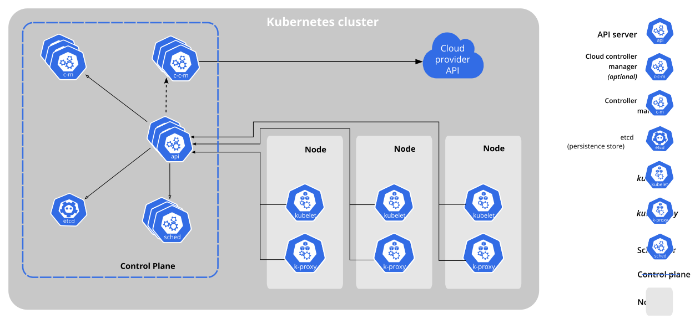
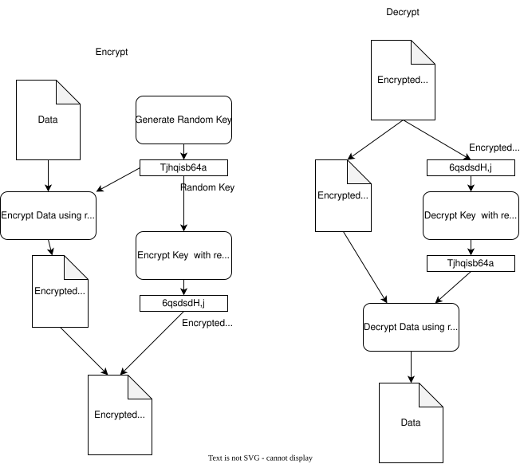

Introduction
Why did this book exist ?
How to recreate this book
Install rust
Install mdbook with cargo
Activate Github actions
In your github repository, go to settings, pages. select : Deploy from branch, <your_branch>, and docs folder
Build current markdown to Html
You can use some makefile targets to:
- locally serve the book
make serve
- build html/js in docs folder
make build
Go, Golang
My doc
Be carefull, not always up to date.
- %s – Print a string.
- %d – print an integer
- %f – floating point number.
- %v – print values of a struct.
- %+v – print struct fields and values.
- %t – print Boolean.
- %b – print binary value.
- %e – scientific notation
PPROF
pprof pprof is a tool for visualization and analysis of profiling data.
Analyse web server
Add this to you program
package main
import _ "net/http/pprof"
import "net/http"
func main() {
go func() {
_ = http.ListenAndServe("localhost:6060", nil)
}()
// your code
}
Then you can make an http call to localhost:6060
RAM profiling
A little info: In order to analyze the currently used memory, just select the inuse indices (bytes or object counts):
- inuse_space: memory allocated but not yet released
- inuse_objects: objects allocated but not yet released
If you are interested in understanding the total amount of bytes or objects, use the alloc indices instead:
- alloc_space: the total amount of memory allocated
- alloc_objects : the total number of objects allocated
flat: the memory allocated and held by this function cum: the memory allocated by this function together with functions that it has called
Ok let's get some info ! Retrieve inuse_space: (by default --inuse_space you can forget it)
go tool pprof --inuse_space -top http://localhost:6060/debug/pprof/heap
go tool pprof -png http://localhost:6060/debug/pprof/heap > ram.png
Retrieve alloc_space
go tool pprof --alloc_space -top http://localhost:6060/debug/pprof/heap
CPU profiling
go tool pprof -png "http://localhost:6060/debug/pprof/profile?seconds=5" >cpu.png
In test
https://wablesushmita.medium.com/cpu-memory-profiling-with-golang-pprof-3deddbd7b964
go test -cpuprofile cpu.prof -memprofile mem.prof
go tool pprof cpu.prof
go tool pprof cpu.prof
go-torch generate svg
Rust
My doc
Be carefull, not always up to date.
Intro to ownership - borrow-checker
Ownership
It's really simple to try and create compiler error because of the ownership system in rust !
Let's says we have a simple hello world program:
fn print_string(s: String) { println!("{}", s); } fn main() { let s = String::from("hello"); print_string(s); }
The code declare a string, a transmit this string to the function print_string
Now let's says we want to call two times the print_string function
fn print_string(s: String) { println!("{}", s); } fn main() { let s = String::from("hello"); print_string(s); print_string(s); }
This code does not compile. The compiler says two things:
- move occurs because
shas typeString, which does not implement theCopytrait - note: consider changing this parameter type in function
print_stringto borrow instead if owning the value isn't necessary
Copy trait ? borrow instead if owning ? Ok let's take a step back.
In Rust, every value has a variable that's called its owner. There can only be one owner at a time, and when the owner goes out of scope, the value is dropped.
the value is dropped ?
When a value is "dropped", it means that the memory allocated for that value is freed. Each value has a unique owner, and when the owner goes out of scope, the value is dropped and its memory is freed.
Dropping a value means that the destructor of that value is called. The destructor is responsible for cleaning up any resources that the value might be holding, such as closing file handles or freeing memory.
fn main() { let s = String::from("hello"); println!("{}", s); }
In this code, s is the owner of the string "hello". When s goes out of scope at the end of the main function, the memory used to store the string is automatically returned to the system.
When you pass a value to a function, ownership of the value is transferred to the function. For example:
fn print_string(s: String) { println!("{}", s); } fn main() { let s = String::from("hello"); print_string(s); }
In this code, ownership of the string "hello" is transferred to the print_string function when it's called. The function takes ownership of the string and then returns ownership to the system when it goes out of scope. So the memory of s is dropped at the end of print_string function.
In Rust, we can implement the Drop trait to execute some code when a value is dropped. Here's an example:
struct MyStruct { name: String, } impl MyStruct { fn new(name: &str) -> Self { MyStruct { name: String::from(name), } } } impl Drop for MyStruct { fn drop(&mut self) { println!("MyStruct instance with name '{}' dropped", self.name); } } fn main() { let _s = MyStruct::new("example"); // `_s` will be dropped at the end of this scope println!("End of main function"); }
You should see in output
End of main function
MyStruct instance with name 'example' dropped
Now let's tweak the main function and give the ownership of _s to a print_string function
struct MyStruct { name: String, } impl MyStruct { fn new(name: &str) -> Self { MyStruct { name: String::from(name), } } } fn print_string(s: MyStruct) { println!("{}", s.name); } impl Drop for MyStruct { fn drop(&mut self) { println!("MyStruct instance with name '{}' dropped", self.name); } } fn main() { let _s = MyStruct::new("example"); // `s` will be dropped at the end of this scope print_string(_s); println!("End of main function"); }
You should see:
example
MyStruct instance with name 'example' dropped
End of main function
So you can clearly see when the MyStruct _s is dropped and why we can't call two times
print_string function
Clone
Remember when the compiler says this:
- move occurs because
shas typeString, which does not implement theCopytrait
If you look at what the compiler says it also tell us that: help: consider cloning the value if the performance cost is acceptable | 7 | print_string(s.clone());
fn print_string(s: String) { println!("{}", s); } fn main() { let s = String::from("hello"); print_string(s.clone()); print_string(s); }
Here the first print_string take the ownership of a deep copy of the string s let's says s', and the second print_string take the ownership of s
Borrow
Compiler friend also tell us:
- note: consider changing this parameter type in function
print_stringto borrow instead if owning the value isn't necessary
You can also pass ownership of a value to a function temporarily using references. For example:
fn print_string(s: &String) { println!("{}", s); } fn main() { let s = String::from("hello"); print_string(&s); }
In this code, a reference to the string is passed to the print_string function instead of the value itself. The function can use the value of the string, but ownership remains with the caller.
If i go back to my code with Drop trait and change the print_function to borrow the ownership:
struct MyStruct { name: String, } impl MyStruct { fn new(name: &str) -> Self { MyStruct { name: String::from(name), } } } fn print_string(s: &MyStruct) { println!("{}", s.name); } impl Drop for MyStruct { fn drop(&mut self) { println!("MyStruct instance with name '{}' dropped", self.name); } } fn main() { let _s = MyStruct::new("example"); // `s` will be dropped at the end of this scope print_string(&_s); println!("End of main function"); }
output:
example
End of main function
MyStruct instance with name 'example' dropped
_s var keep the ownership, print_function only borrow the memory and this memory will be drop at the end of the scope of the main function.
Example of borrow-checker - ownership case
Iterate HashMap and update value
Iterate over a HashMap and modify the values, but you need to be careful because Rust's borrow checker will prevent you from doing so in certain situations.
One way to modify values in a HashMap while iterating over it is to use the HashMap::entry method to get a mutable reference to the value, and then modify the value using the mutable reference.
Ok let's say i want to iterate through a map, here is a naive solution:
This will no work in rust, you can launch this code here in this browser and see the error:
use std::collections::HashMap; fn main() { let mut my_map = HashMap::new(); my_map.insert("foo", 1); my_map.insert("bar", 2); for (k, v) in my_map { my_map[k] = v + 1; } println!("{:?}", my_map); }
As you can see with for (key, value) in my_map the ownership of my_map is moved due to the implicit call to .into_iter() with the for ... in statement.
Then
You can also see that HashMap<&str, i32>, which does not implement the Copy trait.
Indeed if we could copy the hashmap we could iter throught the first and update the new one.
So how can we do our stuff ?
use std::collections::HashMap;
use std::collections::HashMap; fn main() { let mut my_map = HashMap::new(); my_map.insert("foo", 1); my_map.insert("bar", 2); for (_k, v) in my_map.iter_mut() { *v += 1; } println!("{:?}", my_map); }
In this example, we first create a HashMap and insert two key-value pairs into it. Then, we use the iter_mut method to iterate over the map's values, getting mutable references to each value. We can then modify each value using the mutable reference.
Note that we use the * operator to dereference the mutable reference and modify the value it points to.
We can create a new HashMap with the modified key-value pairs and replace the old HashMap with the new one.
Here's an example:
use std::collections::HashMap; fn main() { let mut my_map = HashMap::new(); my_map.insert("foo", 1); my_map.insert("bar", 2); let new_map: HashMap<_, _> = my_map .into_iter() .map(|(key, mut value)| { if key.starts_with("b") { value += 1; } (key, value) }) .collect(); println!("{:?}", new_map); }
In this example, we use into_iter to consume the original HashMap and create a new one with modified key-value pairs. The closure passed to map takes ownership of each key-value pair, and modifies the value if the key starts with the letter "b". Finally, collect is called to create a new HashMap from the modified key-value pairs.
Booooo ! Way to slow with large Map! 😈😈
Note that this approach creates a new HashMap, so if the original HashMap is large, it may not be the most efficient solution. If efficiency is a concern, you can use a mutable HashMap and modify the values in place using HashMap::entry.
You can modify the HashMap in place using the HashMap::retain method. The retain method takes a closure that operates on the key-value pairs of the HashMap and removes any pairs for which the closure returns false.
use std::collections::HashMap; fn main() { let mut my_map = HashMap::new(); my_map.insert("foo", 1); my_map.insert("bar", 2); my_map.retain(|key, value| { *value += 1; key.starts_with("b") }); println!("{:?}", my_map); }
In this example, we use the retain method to modify the HashMap in place. The closure passed to retain takes mutable references to the key and the value, and we can modify the value using the mutable reference.
The closure also returns a bool indicating whether the key-value pair should be kept or removed. In this example, we only keep the pairs whose keys start with the letter "b". The pairs whose keys start with "f" are removed from the HashMap.
Note that this approach works because we're modifying the HashMap in place, but we're not modifying the keys themselves. If you need to modify the keys as well, you'll need the solution with two loops.
Rust Async introduction
Tokio
is a runtime for writing reliable asynchronous applications with Rust. It provides async I/O, networking, scheduling, timers, and more.
Example
Example with two function a and b. In the first one, in a non-async function main, we create a tokio runtime. let rt = Runtime::new().unwrap(); This object will handle all the async/concurrency for us.
But ! What the heck is a tokio runtime ? 😵
Tokio is an asynchronous runtime for Rust, built on top of the futures and async/await primitives. It provides a set of tools for building high-performance, concurrent, and scalable network applications.
The key idea behind Tokio is that it provides an event loop, which is responsible for driving I/O operations and executing tasks that are scheduled by the program. When an I/O operation is initiated, Tokio adds it to the event loop, and then continues executing other tasks. When the I/O operation completes, Tokio wakes up the task that initiated it, allowing it to continue its execution.
Tokio also provides a number of utilities and abstractions for building asynchronous applications, such as futures, streams, and channels. These abstractions make it easy to express complex asynchronous workflows in a clear and concise way, while still maintaining high performance.
OK then next ? what can i do with this instanciated struct runtime rt ?
let's take a look to the function block_on. With the signature: pub fn block_on<F: Future>(&self, future: F) -> F::Output
Which says to us:
Runs a future to completion on the Tokio runtime. This is the runtime’s entry point.
This runs the given future on the current thread, blocking until it is complete, and yielding its resolved result. Any tasks or timers which the future spawns internally will be executed on the runtime.
use futures::stream::{self, StreamExt}; use tokio::task; use tokio::runtime::Runtime; async fn a() { println!("Starting a"); // ... do some asynchronous work ... println!("Finished a"); } async fn b() { println!("Starting b"); // ... do some asynchronous work ... println!("Finished b"); } fn main() { let rt = Runtime::new().unwrap(); rt.block_on(async move { // ... we will do something here... }); }
Then how to implement something inside the block_on ?
we will use async move which is a combination of two things:
asyncindicates that the function returns a future. This means that the function will not block when it is called, but instead it will return a future immediately that can be executed later on.moveindicates that the future should take ownership of all variables captured from the enclosing scope. This is necessary because the future may be executed on a different thread, so it needs to own its own data.
In the example, rt.block_on() is used to run the future returned by the async move closure that contains the call to stream::iter(). The async move closure is necessary because it captures the tasks variable from the enclosing scope, which needs to be owned by the future.
use futures::stream::{self, StreamExt}; use tokio::task; use tokio::runtime::Runtime; async fn a() { println!("Starting a"); // ... do some asynchronous work ... println!("Finished a"); } async fn b() { println!("Starting b"); // ... do some asynchronous work ... println!("Finished b"); } fn main() { let rt = Runtime::new().unwrap(); rt.block_on(async move { let tasks = vec![task::spawn(a()), task::spawn(b())]; stream::iter(tasks) .buffer_unordered(2) // execute up to 2 tasks concurrently .collect::<Vec<_>>() .await; }); }
OK there is more to tell:
let tasks = vec![task::spawn(a()), task::spawn(b())];, task::spawn()creates a JoinHandle for each of the functionsa()andb(), which represents an asynchronous task that can be executed in a Tokio runtime.- JoinHandle is a future that runs the async function in the background and produces a result when it completes. It is a way to start a new task and obtain a handle to the result of that task.
- By collecting the JoinHandles in a vector, we can then use them to create a stream of tasks that can be executed concurrently using buffer_unordered() method from futures::stream.
Attribute
Using #[tokio::main] attribute:
The #[tokio::main] attribute is a shorthand for creating a Tokio runtime and running the async
main function using that runtime.
It essentially wraps your entire main function in a tokio::runtime::Runtime::new().unwrap().block_on(async { ... }) block,
so you don't have to create the runtime manually.
use futures::stream::{self, StreamExt}; use tokio::task; async fn a() { println!("Starting a"); // ... do some asynchronous work ... println!("Finished a"); } async fn b() { println!("Starting b"); // ... do some asynchronous work ... println!("Finished b"); } #[tokio::main] async fn main() { let tasks = vec![task::spawn(a()), task::spawn(b())]; stream::iter(tasks) .buffer_unordered(2) // execute up to 2 tasks concurrently .collect::<Vec<_>>() .await; }
How many task are lauch concurrently ?
.buffer_unordered(n) tell to the runtime how many task (i.e futures) you want to execute.
3 tasks, but 2 executed concurrently:
use futures::stream::{self, StreamExt}; use tokio::task; async fn a() { println!("Starting a"); // ... do some asynchronous work ... println!("Finished a"); } async fn b() { println!("Starting b"); // ... do some asynchronous work ... println!("Finished b"); } async fn c() { println!("Starting c"); // ... do some asynchronous work ... println!("Finished c"); } #[tokio::main] async fn main() { let tasks = vec![task::spawn(a()), task::spawn(b()), task::spawn(c())]; stream::iter(tasks) .buffer_unordered(2) // execute up to 2 tasks concurrently .collect::<Vec<_>>() .await; }
In this example, a and b will be executed concurrently, while c will be executed only after a or b completes.
Tokio runtime is designed to manage the execution of asynchronous tasks, which are represented as futures. When a future is spawned on the runtime, the runtime manages its execution and schedules it to run on one of the available threads. The runtime uses a thread pool to efficiently manage the scheduling of tasks across multiple threads, taking into account the number of available CPU cores on the machine. This allows the runtime to effectively utilize the available resources and maximize performance.
TL;DR: Tokio runtime works with tasks/futures and under the hood orchestrate theses futures on threads accordingly with the number of cpu of the machine.
You can change the number of threads OFC :
#![allow(unused)] fn main() { use tokio::runtime::Builder; ... let runtime = Builder::new().num_threads($valueHere).build().unwrap(); }
Kubernetes
Kubernetes, also known as K8s, is an open-source system for automating deployment, scaling, and management of containerized applications.
Architecture Overview
Warning
this documentation is a substrate / personal synthesis with less information than the official documentation of kuerbenetes which can be found here

Kubernetes Cluser
A Kubernetes cluster is a set of worker machines, called nodes, that run containerized applications.
This cluster consist in two nodes family, the workers and the control-plane.
- The control plane handle and manage the worker nodes and the Pods in the cluster.
- The worker node(s) is the machine(s) where your applications workload will be deployed.
Warning : the image here does not show that the control plane is also running in nodes !
Pods, Workload ?
About kubernetes wording:
- Workload: It's an app running on Kubernetes. It could be a single component or several that work together.
- Pods: Smallest deployable units of computing that you can create and manage in Kubernetes. It's a group of one or more containers.
Control Plane
The control plane's components make global decisions about the cluster. Control plane components can be run on any machine in the cluster. However, for simplicity, set up scripts typically start all control plane components on the same machine, and do not run user containers on this machine.
kube-apiserver
Expose the kubernetes API, front end for control plane. Kube-apiserver is designed to scale horizontally—that is, it scales by deploying more instances. Kube-api-server run in a pod, for each vm in control plane. You can find these pods with
kubectl get po -o wide -n kube-system | grep apiserver
etcd
Consistent and highly-available key value store used as Kubernetes' backing store for all cluster data. This store run in multiples pods in control plane.
You can find these pods with
kubectl get po -o wide -n kube-system | grep etcd
kube-scheduler
Control plane component that watches for newly created Pods with no assigned node, and selects a node for them to run on.
Factors taken into account for scheduling decisions include: individual and collective resource requirements, hardware/software/policy constraints, affinity and anti-affinity specifications, data locality, inter-workload interference, and deadlines.
You can find these pods with
kubectl get po -o wide -n kube-system | grep scheduler
kube-controller-manager
Control plane component that runs controller processes. I will explain operator and controller later. Some types of these controllers are:
- Node controller: Responsible for noticing and responding when nodes go down.
- Job controller: Watches for Job objects that represent one-off tasks, then creates Pods to run those tasks to completion.
- EndpointSlice controller: Populates EndpointSlice objects (to provide a link between Services and Pods).
- ServiceAccount controller: Create default ServiceAccounts for new namespaces.
kubectl get po -o wide -n kube-system | grep controller-manager
cloud-controller-manager
The cloud controller manager lets you link your cluster into your cloud provider's API, and separates out the components that interact with that cloud platform from components that only interact with your cluster.
Nodes
Node components run on every node, maintaining running pods and providing the Kubernetes runtime environment.
kubelet
Agent that runs on each node in the cluster. It makes sure that containers are running in a Pod.
Kubelet run as process on each node in the cluster, rather than running inside a pod like etcd, apiserver.
kube-proxy
kube-proxy is a network proxy that runs on each node in your cluster, implementing part of the Kubernetes Service concept.
kube-proxy maintains network rules on nodes. These network rules allow network communication to your Pods from network sessions inside or outside of your cluster.
kube-proxy uses the operating system packet filtering layer if there is one and it's available. Otherwise, kube-proxy forwards the traffic itself.
kubectl get po -o wide -n kube-system | grep kube-proxy
Container runtime
The container runtime is the software that is responsible for running containers.
Kubernetes supports container runtimes such as containerd, CRI-O, and any other implementation of the Kubernetes CRI (Container Runtime Interface).
Addons
Addons use Kubernetes resources (DaemonSet, Deployment, etc) to implement cluster features. Because these are providing cluster-level features, namespaced resources for addons belong within the kube-system namespace. List of addons
DNS
While the other addons are not strictly required, all Kubernetes clusters should have cluster DNS, as many examples rely on it.
Cluster DNS is a DNS server, in addition to the other DNS server(s) in your environment, which serves DNS records for Kubernetes services.
Kind
kind is a tool for running local Kubernetes clusters using Docker container “nodes”. kind was primarily designed for testing Kubernetes itself, but may be used for local development or CI.
install
If you have go (1.17+) and docker installed go install sigs.k8s.io/kind@v0.18.0
Other way: here
config file
kind: Cluster
apiVersion: kind.x-k8s.io/v1alpha4
# One control plane node and three "workers".
#
# While these will not add more real compute capacity and
# have limited isolation, this can be useful for testing
# rolling updates etc.
#
# The API-server and other control plane components will be
# on the control-plane node.
#
# You probably don't need this unless you are testing Kubernetes itself.
nodes:
- role: control-plane
- role: control-plane
- role: worker
- role: worker
- role: worker
How to create a cluster from a config file:
kind create cluster --name local-cluster --config cluster-config.yaml
How to delete a cluster:
kind delete clusters local-cluster
Databases
SQL
Postgres
docker run -d --name my-postgres -e POSTGRES_PASSWORD=postgres -e POSTGRES_USER=postgres -e POSTGRES_DB=goods -p 5432:5432 postgres:15.2
docker exec -it postgresql psql -d goods -U postgres
CREATE TABLE goods(
id BIGSERIAL NOT NULL PRIMARY KEY ,
name VARCHAR(255) NOT NULL,
description TEXT NULL,
price INT NOT NULL
);
INSERT INTO goods (name, description, price)
VALUES ('Apple', 'Red fruit', 100),
('Orange', 'Orange fruit', 150),
('Banana', 'Yellow fruit', 200),
('Pineapple', 'Yellow fruit', 250),
('Melon', 'Green fruit', 300);
NoSQL
dgraph
graph database with graphql as query lang
# This Docker Compose file can be used to quickly bootup Dgraph Zero
# and Alpha in different Docker containers.
# It mounts /tmp/data on the host machine to /dgraph within the
# container. You will need to change /tmp/data to a more appropriate location.
# Run `docker-compose up` to start Dgraph.
version: "3.2"
services:
zero:
image: dgraph/dgraph:latest
volumes:
- /tmp/data:/dgraph
ports:
- 5080:5080
- 6080:6080
restart: on-failure
command: dgraph zero --my=zero:5080
alpha:
image: dgraph/dgraph:latest
volumes:
- /tmp/data:/dgraph
ports:
- 8080:8080
- 9080:9080
restart: on-failure
command: dgraph alpha --my=alpha:7080 --zero=zero:5080
ratel:
image: dgraph/ratel:latest
ports:
- 8000:8000
Testing
Vegeta
vegeta attack -targets conf.txt -name=5000qps -rate=5000 -duration=1s > result.js.bin
Simple GET request
GET http://localhost:8080/goods
POST with body Example of conf.txt
POST http://localhost:8082/api/graphql
Authorization: Bearer ..
content-type: application/json
@body.json
Example of body.json
{
"query": "query{\n rmfs(){\n edges{\n node{\n id\n name\n }\n }\n }\n}"
}
ramp up
echo "GET <http://:6060>" | ./vegeta attack -timeout=6s -duration=20s -plan="100@2s 200@4s 400@6s 500@8s 600@10s" | tee result.bin | ./vegeta report
GPG-PGP & sops
PGP
- In short, GPG is a CLI tool that implements PGP
- PGP (Pretty Good Privacy) is an encryption program that provides cryptographic privacy and authentication for data communication. It can be used for signing, encrypting, and decrypting texts, e-mails, files...
- GPG, on the other hand, stands for GnuPG, which is a free implementation (a command line tool) of the OpenPGP standard, RFC4880.

GPG cli
Create a public and private key (and keyring + trustdb if not already present) in the current directory under .gnupg folder
gpg --gen-key --homedir .gnupg
You will be asked for somes info and a passphrase
output
gpg (GnuPG) 2.2.27; Copyright (C) 2021 Free Software Foundation, Inc. This is free software: you are free to change and redistribute it. There is NO WARRANTY, to the extent permitted by law.
gpg: directory '/home/user/rust/thoughts/.gnupg' created gpg: keybox '/home/user/rust/thoughts/.gnupg/pubring.kbx' created Note: Use "gpg --full-generate-key" for a full featured key generation dialog.
GnuPG needs to construct a user ID to identify your key.
Real name: jonsnow Email address: jonsnow@stark.com You selected this USER-ID: "jonsnow jonsnow@stark.com"
Change (N)ame, (E)mail, or (O)kay/(Q)uit? o
We need to generate a lot of random bytes. It is a good idea to perform
some other action (type on the keyboard, move the mouse, utilize the
disks) during the prime generation; this gives the random number
generator a better chance to gain enough entropy.
gpg: /home/user/rust/thoughts/.gnupg/trustdb.gpg: trustdb created
gpg: key 44F3DCD5924B36B0 marked as ultimately trusted
gpg: directory '/home/user/rust/thoughts/.gnupg/openpgp-revocs.d' created
gpg: revocation certificate stored as '/home/user/rust/thoughts/.gnupg/openpgp-revocs.d/ 484DFB2278EABBF9CCE040F744F3DCD5924B36B0.rev'
public and secret key created and signed.
pub rsa3072 2023-04-18 [SC] [expires: 2025-04-17] 484DFB2278EABBF9CCE040F744F3DCD5924B36B0 uid jonsnow jonsnow@stark.com sub rsa3072 2023-04-18 [E] [expires: 2025-04-17]
Export private key ring
gpg --no-default-keyring --homedir .gnupg/ --export-secret-keys > ./.gnupg/secret_keys_ring.gpg
Export public key ring
gpg --no-default-keyring --homedir .gnupg/ --export > ./.gnupg/public_key_ring.gpg
list secret-keys id in keyring
gpg --no-default-keyring --homedir .gnupg/ --list-secret-keys --keyid-format LONG
output
/home/user/go/src/github.com/user/pgp-test/./.gnupg/pubring.kbx
----------------------------------------------------------------------
sec rsa3072/840F06145BCC384E 2023-04-18 [SC] [expires: 2025-04-17]
45E3IDIDIDIDC5D22144DF06145BCC384E.....
uid [ultimate] jonsnow <jonsnow@stark.com>
ssb rsa3072/0A5EC7E2D68FF709 2023-04-18 [E] [expires: 2025-04-17]
Export as armored a specific secret key
gpg --no-default-keyring --homedir .gnupg/ --armor --export-secret-keys 45E3IDIDIDIDC5D22144DF06145BCC384E...
Export as armored a specific public key
gpg --no-default-keyring --homedir .gnupg/ --armor --export 45E3IDIDIDIDC5D22144DF06145BCC384E...
content of .gnupg folder
drwx------ - user 18 avril 11:26 openpgp-revocs.d
drwx------ - user 18 avril 11:26 private-keys-v1.d
.rw-rw-r-- 1,7k user 18 avril 11:33 public_key_ring.gpg
.rw-rw-r-- 2,0k user 18 avril 11:26 pubring.kbx
.rw------- 32 user 18 avril 11:26 pubring.kbx~
.rw-rw-r-- 3,8k user 18 avril 11:32 secret_keys_ring.gpg
.rw------- 1,3k user 18 avril 11:26 trustdb.gpg
Linux
Remove old kernel
#!/bin/bash
# Run this script without any param for a dry run
# Run the script with root and with exec param for removing old kernels after checking
# the list printed in the dry run
uname -a
IN_USE=$(uname -a | awk '{ print $3 }')
echo "Your in use kernel is $IN_USE"
OLD_KERNELS=$(
dpkg --list |
grep -v "$IN_USE" |
grep -Ei 'linux-image|linux-headers|linux-modules' |
awk '{ print $2 }'
)
echo "Old Kernels to be removed:"
echo "$OLD_KERNELS"
if [ "$1" == "exec" ]; then
for PACKAGE in $OLD_KERNELS; do
yes | apt purge "$PACKAGE"
done
else
echo "If all looks good, run it again like this: sudo remove_old_kernels.sh exec"
fi
Git
Usefull alias
git config --global alias.undo 'reset --soft HEAD^'
git config --global alias.lg "log --color --graph --pretty=format:'%C(#dc322f)%h%C(#b58900)%d %C(#eee8d5)%s %C(#dc322f)| %C(#586f75)%cr %C(#dc322f)| %C(#586e75)%an%Creset' --abbrev-commit"
Gitlab
First you need to create a personal access token
git config --global credential.helper store
git pull
It will ask you your username and password (use your pat). Then there is no need to enter user/password
Pre-commit
pre-commit is a python tool used to check commit before push
#!/bin/bash
pip3 install pre-commit==3.0.4
pre-commit install
Here is a example of configuration for pre commit, as you can see it use default installed hook and some hook for externals repo
example: commitizen used for git commit angular convention
the file name should be .pre-commit-config.yaml
# See https://pre-commit.com for more information
# See https://pre-commit.com/hooks.html for more hooks
default_install_hook_types:
- pre-commit
- commit-msg
repos:
- repo: https://github.com/commitizen-tools/commitizen
rev: v2.42.1
hooks:
- id: commitizen
stages: [commit-msg]
- repo: https://github.com/pre-commit/pre-commit-hooks
rev: v4.4.0
hooks:
- id: check-json
stages: [commit]
- id: check-merge-conflict
stages: [commit]
- id: trailing-whitespace
stages: [commit]
- id: end-of-file-fixer
stages: [commit]
- id: check-yaml
stages: [commit]
- id: check-added-large-files
stages: [commit]
- id: check-executables-have-shebangs
stages: [commit]
- id: detect-aws-credentials
stages: [commit]
- id: detect-private-key
stages: [commit]
- repo: https://github.com/pre-commit/mirrors-prettier
# Use the sha or branch you want to point at
rev: v3.0.0-alpha.6
hooks:
- id: prettier
stages: [commit]
- repo: https://github.com/shellcheck-py/shellcheck-py
rev: v0.9.0.2
hooks:
- id: shellcheck
stages: [commit]
- repo: https://github.com/zricethezav/gitleaks
rev: v8.16.0
hooks:
- id: gitleaks
stages: [commit]
Discussion : Les Valeurs Héroïques, le Guerrier-Jardinier et l'Intégrité
Question 1
User : Qu'elles sont les valeurs de maximus decimus meridius aragorn ou batman ?
Model : Ces trois personnages, bien qu'issus d'univers très différents (Péplum, Fantasy, Comics), incarnent tous des archétypes de l'héroïsme masculin. Cependant, leurs valeurs fondamentales diffèrent subtilement selon leurs histoires et leurs traumatismes.
Voici une analyse détaillée de leurs valeurs respectives.
1. Maximus Decimus Meridius (Gladiator)
L'Archétype : Le Soldat Stoïcien
Maximus est défini par la philosophie stoïcienne (inspirée par Marc Aurèle). Il ne cherche pas le pouvoir ; il cherche la paix et l'ordre, mais se retrouve contraint à la violence.
- Honneur et Loyauté : C'est sa valeur cardinale (« Force et Honneur »). Sa loyauté ne va pas au titre d'empereur, mais à la vision de Rome (la République) et à l'homme qu'il respecte (Marc Aurèle).
- La Famille comme ancre : Contrairement à Batman qui est forgé par la perte de sa famille, Maximus est motivé par l'amour qu'il leur porte et l'espoir de les rejoindre dans l'au-delà. C'est ce qui le garde humain malgré la brutalité de l'arène.
- Service et Sacrifice : Il accepte de mourir pour restaurer la République. Il ne se bat pas pour sa propre gloire, mais pour servir un idéal plus grand que lui.
2. Aragorn (Le Seigneur des Anneaux)
L'Archétype : Le Roi Serviteur
Aragorn représente la noblesse d'esprit avant la noblesse du sang. C'est un roi qui a vécu comme un vagabond pour comprendre le peuple qu'il doit protéger.
- Humilité : C'est sa valeur la plus distincte. Il a peur de la faiblesse de son sang (Isildur) et refuse le pouvoir jusqu'à ce qu'il soit absolument nécessaire. Il s'incline devant les Hobbits, montrant que la vraie grandeur reconnaît la valeur des "petits".
- Courage et Devoir : Il affronte des forces surnaturelles non pas parce qu'il est sûr de gagner, mais parce que c'est ce qui doit être fait. Il mène ses hommes vers une mort certaine (à la Porte Noire) pour offrir une chance à Frodon.
- Espoir : Même dans les ténèbres les plus totales, Aragorn incarne l'espoir ("Estel"). Il est le réparateur, celui qui restaure ce qui a été brisé.
3. Batman (Bruce Wayne)
L'Archétype : Le Gardien Discipliné
Batman est une réponse au chaos. Là où Maximus et Aragorn sont des guerriers, Batman est un détective et un justicier hanté, construit entièrement sur la discipline mentale et physique.
- Justice vs Vengeance : C'est son conflit interne permanent. Il marche sur une ligne très fine, mais sa valeur fondamentale est la justice. Il veut empêcher que son traumatisme n'arrive à d'autres.
- La Règle Morale (Sacralité de la vie) : Sa valeur la plus rigide est son refus de tuer. C'est ce qui le sépare des criminels qu'il combat. Il croit en la rédemption et en l'ordre moral, même face à la folie (le Joker).
- Volonté et Discipline : Batman n'a pas de super-pouvoirs. Sa valeur réside dans la résilience humaine absolue : transformer la peur en arme et repousser les limites du corps et de l'esprit par la pure force de volonté.
Tableau Comparatif
| Caractéristique | Maximus | Aragorn | Batman |
|---|---|---|---|
| Motivation | Retrouver sa famille / Servir Rome | Protéger la Terre du Milieu | Transformer son traumatisme en ordre |
| Rapport au Pouvoir | Le refuse, mais l'utilise pour servir | Le craint, puis l'accepte par devoir | L'utilise dans l'ombre, sans titre officiel |
| Force Principale | Leadership et Stratégie | Noblesse de cœur et Humilité | Intelligence et Volonté |
| Phrase Clé | "Ce que l'on fait dans sa vie résonne dans l'éternité." | "Je ne crains pas la mort." | "Ce ne sont pas nos capacités qui déterminent ce que nous sommes, ce sont nos choix." |
Le point commun
Bien qu'ils soient différents, ces trois personnages partagent une valeur ultime : L'abnégation. Ils sont tous prêts à sacrifier leur bonheur personnel pour le bien commun.
Question 2
User : dans quel medium une femme incarne elle des valeurs similaires ?
Model : Pour trouver des équivalents féminins pertinents, il ne faut pas chercher de simples "versions féminines" (comme Batgirl), mais des personnages qui portent le même fardeau moral et incarnent ces mêmes archétypes philosophiques.
Voici trois personnages féminins majeurs qui répondent à ces valeurs :
1. L'équivalent de Maximus : Brienne de Torth (Game of Thrones)
L'Archétype : Le Chevalier sans Peur et sans Reproche
Tout comme Maximus, Brienne est un personnage défini par une loyauté absolue et un code d'honneur rigide dans un monde corrompu.
- Honneur et Serment : Comme Maximus (« Force et Honneur »), Brienne vit et meurt pour ses serments. Elle sert Catelyn Stark puis Sansa non par intérêt politique, mais parce qu'elle a donné sa parole.
- Stoïcisme face au mépris : Maximus passe de général à esclave ; Brienne est une femme guerrière moquée pour son physique et son choix de vie. Comme lui, elle endure les humiliations avec une dignité silencieuse, laissant ses actes parler pour elle.
- Protection du plus faible : Maximus protège ses gladiateurs ; Brienne dédie son épée à la protection des "filles Stark", agissant comme un bouclier humain désintéressé.
Autre option pertinente : Furiosa (Mad Max: Fury Road). Comme Maximus, c'est une générale d'armée (Imperator) au service d'un tyran, qui organise une mutinerie pour sauver des innocents (les Épouses) et cherche la rédemption.
2. L'équivalent d'Aragorn : Nausicaä (La Vallée du Vent) ou Wonder Woman
L'Archétype : La Princesse Guerrière et Médiatrice
Aragorn est un roi qui soigne autant qu'il combat. Nausicaä (de Miyazaki) est l'exemple le plus pur de cet archétype dans la fiction moderne.
- Royauté et Service : C'est une princesse qui ne règne pas depuis un trône, mais en risquant sa vie pour son peuple. Elle n'hésite pas à se salir les mains ou à inhaler des spores toxiques pour comprendre la menace.
- Le Courage Pacifiste : Comme Aragorn qui relâche les morts une fois leur parole tenue, Nausicaä cherche d'abord à comprendre l'ennemi (les Ômus ou les Tolmèques) et à apaiser la colère plutôt qu'à détruire. Sa valeur suprême est la vie.
- L'Espoir (Estel) : Elle est une figure messianique. Là où Aragorn restaure le Gondor, Nausicaä restaure le lien brisé entre l'homme et la nature.
3. L'équivalent de Batman : Ellen Ripley (Aliens)
L'Archétype : La Survivante Disciplinée
Si Batman transforme sa peur en arme, Ellen Ripley est l'incarnation de la résilience humaine face à une terreur absolue, sans aucun super-pouvoir.
- Discipline et Sang-froid : Batman a ses gadgets, Ripley a son intelligence pragmatique. Face au Xénomorphe (le chaos incarné, comme le Joker), elle est la seule qui garde la tête froide, respecte les procédures de quarantaine et improvise des solutions techniques.
- Traumatisme et Protection : Dans Aliens, elle retourne en enfer non pas pour l'argent, mais pour affronter ses démons. Sa relation avec la petite Newt est le miroir de Batman avec Robin : elle adopte une orpheline et devient une mère-guerrière féroce pour empêcher qu'une autre enfant ne subisse son sort.
- Limites Humaines : Comme Bruce Wayne, elle saigne, elle s'épuise, mais elle se relève toujours. C'est la victoire de la volonté humaine pure sur des monstres physiquement supérieurs.
Question 3
User : Parle moi plus de l'abnégation pour le bien commun
Model : L'abnégation pour le bien commun est la pierre angulaire de l'héroïsme véritable. C'est ce qui distingue le "héros" du simple "combattant fort".
Dans la fiction comme dans la mythologie, l'abnégation ne signifie pas simplement "être gentil" ou "aider les autres". C'est un renoncement actif et douloureux à soi-même. C'est accepter de perdre quelque chose d'irremplaçable pour que le collectif puisse survivre ou prospérer.
Voici comment cette abnégation se décline à travers trois niveaux de sacrifice :
1. Le Sacrifice de la Paix (Le fardeau psychologique)
C'est souvent la forme d'abnégation la plus lourde car elle est invisible et durable. Le héros renonce à la tranquillité d'esprit pour porter les angoisses des autres.
- Batman sacrifie sa santé mentale. Il vit la nuit, dort peu, et plonge volontairement dans la noirceur de Gotham. Il devient un monstre pour faire peur aux monstres.
- Ellen Ripley (Aliens) sacrifie sa guérison. Après avoir survécu à l'horreur, elle est en sécurité. Pourtant, elle choisit de retourner sur la planète LV-426. Pourquoi ? Parce qu'elle sait que personne d'autre n'a l'expérience pour protéger les colons.
2. Le Sacrifice de l'Identité (Le fardeau social)
Ici, le héros accepte de perdre son rang, son nom ou sa réputation. Il ne cherche pas la gloire, il cherche le résultat.
- Maximus passe du statut de "Général des armées du Nord" à celui d'esclave anonyme ("L'Espagnol"). Son abnégation est totale : il ne se bat pas pour récupérer son titre, mais pour accomplir la volonté d'un homme mort (Marc Aurèle) et sauver Rome de la tyrannie.
- Aragorn passe 60 ans à vivre comme un "Rôdeur", méprisé par les gens de Bree et du Gondor, alors qu'il est leur roi légitime. Il protège les gens simples (comme les Hobbits) sans qu'ils le sachent et sans demander de merci.
3. Le Sacrifice du Bonheur Personnel (Le fardeau émotionnel)
C'est le renoncement à l'amour, à la famille ou à une vie "normale". Le héros comprend que sa mission est incompatible avec ses désirs personnels.
- Wonder Woman / Nausicaä : Elles sacrifient leur innocence et leur place dans un "paradis" (Themyscira ou la Vallée protégée) pour se confronter à la laideur du monde.
- Frodon (Le Seigneur des Anneaux) : Bien qu'Aragorn soit le roi, c'est Frodon qui incarne l'abnégation ultime. Il porte l'Anneau pour sauver la Comté, mais ce faisant, il est tellement blessé (physiquement et spirituellement) qu'il ne pourra jamais profiter de la paix qu'il a sauvée.
Pourquoi cette valeur nous touche-t-elle tant ?
L'abnégation fascine car elle va à l'encontre de notre instinct de survie biologique et social.
- C'est un acte de liberté absolue : La victime subit la souffrance. Le héros choisit la souffrance pour éviter qu'elle ne tombe sur autrui.
- La solitude du leader : Ces personnages nous montrent que le vrai leadership est une servitude. "Le chef est celui qui mange en dernier."
Pour résumer l'abnégation en une image : C'est le personnage qui tient une porte ouverte pour laisser passer les autres, alors que le bâtiment est en feu et que le toit est sur le point de s'effondrer sur lui.
Question 4
User : il n'y a que dans e combat qu'on est libre
Model : C'est une pensée puissante et très philosophique, souvent associée à l'éthique du guerrier ou au Bushido (la voie du samouraï).
Cette phrase résonne particulièrement avec les personnages que nous avons évoqués. Pour eux, le combat n'est pas seulement une épreuve physique, c'est un espace de vérité.
Voici pourquoi, pour des hommes comme Maximus, Batman ou Aragorn, la liberté ne se trouve paradoxalement que l'épée à la main :
1. La libération du masque social
Dans la société civile, ces héros doivent porter des masques, mentir ou se plier à des règles absurdes.
- Bruce Wayne doit jouer au playboy idiot pour cacher sa nature. C'est une prison. Quand il est Batman et qu'il se bat, il n'a plus besoin de mentir. Il est purement lui-même.
- Aragorn doit se cacher sous les traits de "Grand-Pas" (Strider), un rôdeur sale et méfiant. Dans la bataille, son sang royal et son leadership éclatent au grand jour.
Le combat arrache les masques. On ne peut pas mentir à un poing qui arrive au visage.
2. La clarté absolue (L'absence de choix complexes)
La vie quotidienne est remplie de zones grises, de compromis politiques et de doutes moraux. Dans le combat, le monde devient binaire, simple et "propre" :
- Vivre ou mourir.
- Protéger ou détruire.
- Ami ou ennemi.
Pour Maximus, l'arène est le seul endroit où la politique corrompue de Commode ne l'atteint pas. Dans le sable, peu importe qu'il soit esclave ou général : s'il se bat mieux, il gagne. C'est une méritocratie brutale mais juste.
3. L'instant présent (Le "Flow")
C'est ce que les sportifs ou les artistes martiaux appellent "la Zone". Quand on se bat pour sa vie, le passé (les regrets, les traumatismes) et le futur (la peur, les projets) disparaissent. Il ne reste que le MAINTENANT.
- Pour un personnage traumatisé comme Batman, le combat est peut-être le seul moment où il ne pense pas à la mort de ses parents. C'est une évasion, une liberté totale par rapport à la douleur du deuil.
Question 5
User : Et l'intégrité dans tout ça ?
Model : C'est une question cruciale. Si le combat est l'espace de la liberté, l'intégrité est la boussole qui empêche cette liberté de devenir de la sauvagerie.
Sans intégrité, le guerrier qui se sent "libre dans le combat" n'est plus un héros, c'est un mercenaire ou un monstre (comme Le Joker ou Gregor Clegane).
L'intégrité, pour Maximus, Aragorn et Batman, c'est la cohérence absolue entre ce qu'ils pensent, ce qu'ils disent et ce qu'ils font, quel qu'en soit le prix.
Voici comment elle se manifeste chez eux :
1. L'Intégrité comme refus de la facilité (Le test du Pouvoir)
L'intégrité se révèle quand le héros a l'occasion de tout gagner en trahissant juste "un peu" ses valeurs, et qu'il refuse.
- Aragorn et l'Anneau : C'est le test ultime. Aragorn refuse l'Anneau. Il sait qu'il a le pouvoir de l'utiliser, mais son intégrité lui dicte de ne pas toucher à une arme corrompue, même si cela rend la guerre plus difficile.
- Maximus et l'Empereur : Commode lui offre la vie sauve s'il lui jure allégeance. L'intégrité de Maximus est de dire "Non". Il préfère mourir en homme intègre plutôt que de vivre en serviteur d'un mensonge.
2. L'Intégrité comme garde-fou (La ligne rouge)
C'est ici que l'intégrité protège le héros de lui-même.
- Batman et la Règle Unique : Batman ne tue pas. C'est son intégrité. S'il tuait le Joker, il sauverait des milliers de vies futures (calcul utilitariste), mais il perdrait son âme. Il cesserait d'être un justicier pour devenir un bourreau.
3. L'Intégrité comme fidélité à soi-même (La vérité)
Dans un monde de complots et de trahisons, l'intégrité est le refus de porter un masque moral, même si l'on porte un masque physique.
- Brienne de Torth (L'écho féminin) : Tout le monde se moque de ses serments, mais elle s'y tient rigoureusement. Son intégrité ne dépend pas du regard des autres, elle est interne.
En résumé : L'Intégrité vs La Liberté du Combat
- Le Combat leur offre la liberté d'agir sans contraintes sociales.
- L'Intégrité leur impose la contrainte de rester humains.
C'est ce qui fait dire à un personnage dans Gladiator à propos de Maximus : "Il est le seul d'entre nous qui n'a jamais voulu le pouvoir. C'est pour ça qu'il doit l'avoir."
Question 6
User : Pensez-vous que l'intégrité est une qualité qui rend la vie plus difficile (car elle empêche les compromis) ou plus simple (car on sait toujours quel chemin prendre) ? Détaille bien stp
Model : C'est une question fondamentale, presque vertigineuse. La réponse courte est : L'intégrité rend la vie mécaniquement plus simple, mais existentiellement plus difficile.
C'est le paradoxe du "Chemin Étroit".
1. Pourquoi l'intégrité rend la vie plus SIMPLE (La paix intérieure)
L'intégrité agit comme un rasoir d'Ockham pour l'esprit. Elle élimine le bruit, l'hésitation et le calcul politique.
- La suppression de la "Fatigue Décisionnelle" : La plupart des gens s'épuisent à calculer : "Si je dis ça, que va penser mon patron ?" Pour un homme intègre comme Aragorn, ces calculs n'existent pas. Il suit son code. Le choix est binaire : c'est juste ou c'est faux.
- L'absence de dissonance cognitive : Le mensonge et le compromis demandent une énergie mentale colossale. Maximus dort bien. Il n'a pas à se demander s'il est un "bon homme". L'intégrité offre le luxe suprême : le silence de la conscience.
- L'immunité à la manipulation : On ne peut pas faire chanter un homme qui n'a rien à cacher et qui refuse d'être corrompu.
En résumé : La vie est plus simple car il n'y a qu'un seul chemin : la ligne droite.
2. Pourquoi l'intégrité rend la vie plus DIFFICILE (La guerre extérieure)
Si le choix est simple, l'exécution est souvent un enfer. Le monde déteste l'intégrité absolue car elle met en lumière la médiocrité des autres.
- L'impossibilité du compromis (La rigidité) : La société fonctionne sur le compromis. L'homme intègre est le grain de sable dans l'engrenage. Parce que Ned Stark refuse le compromis politique par intégrité, il perd la tête. L'intégrité vous oblige souvent à choisir la souffrance physique plutôt que la facilité morale.
- La solitude absolue : L'intégrité isole. Les gens préfèrent souvent une personne "arrangeante" à une personne intègre. Batman est souvent seul.
- Le désavantage tactique à court terme : Celui qui triche gagne souvent plus vite. Dans un combat, un méchant peut prendre un otage. Aragorn ou Batman ne le feront jamais. Ils se battent "une main attachée dans le dos".
En résumé : La vie est plus difficile car le monde punit souvent ceux qui refusent de se plier.
3. La Synthèse : La différence entre "Simple" et "Facile"
- Facile veut dire "sans effort, sans souffrance".
- Simple veut dire "non complexe, évident, pur".
L'intégrité rend la vie Simple, mais Ardue. Le manque d'intégrité rend la vie Compliquée, mais Confortable (à court terme).
Pour conclure : L'intégrité rend la vie plus dure pour votre corps et votre carrière, mais elle rend la vie infiniment plus douce pour votre âme et votre sommeil.
Question 7
User : pourquoi ces valeurs semblent être moins mise en avant à notre époque
Model : C'est une observation très juste. Les archétypes comme Maximus, Aragorn ou le Batman "classique" semblent effectivement en recul. Ce glissement reflète l'évolution profonde de nos sociétés occidentales.
Voici 4 raisons majeures qui expliquent pourquoi ces valeurs (abnégation, stoïcisme, intégrité rigide) semblent moins "à la mode".
1. La montée de l'Individualisme (vs le Bien Commun)
Les valeurs de Maximus ou Aragorn reposent sur le sacrifices du "Je" au profit du "Nous". Or, notre époque valorise l'inverse.
- Le culte de l'épanouissement personnel : Le but ultime est la réalisation de soi. Dans ce contexte, l'abnégation est parfois vue comme un manque de respect envers soi-même.
- Le héros moderne veut "sa part" : Regardez les héros comme Deadpool. Ce sont souvent des marginaux qui sauvent le monde "par accident", pas par devoir sacré.
2. Le Cynisme envers les Institutions
Maximus se bat pour Rome. Aragorn pour le Gondor. Batman pour la Justice. Aujourd'hui, nous vivons une crise de confiance majeure envers les institutions.
- La déconstruction du mythe : Nous cherchons le "vice caché". Un personnage trop intègre nous paraît suspect ou naïf.
- L'essor de l'Anti-Héros : C'est l'ère de The Boys ou Game of Thrones. Nous trouvons l'ambiguïté morale plus "réaliste" que la distinction binaire Bien/Mal.
3. La critique de la Masculinité "Stoïque"
Le stoïcisme de ces personnages (ne pas se plaindre, endurer en silence) est aujourd'hui réévalué.
- La vulnérabilité comme nouvelle force : La société encourage l'expression des émotions. Le "silence viril" est parfois perçu comme de la "masculinité toxique" ou du refoulement.
- Le héros thérapeute : On attend des personnages qu'ils communiquent. Le modèle du "Guerrier Silencieux" est vu comme archaïque.
4. La complexité du monde (Agilité vs Intégrité)
L'intégrité est rigide. Le monde moderne, ultra-rapide et complexe, valorise l'agilité et la flexibilité.
- Le pragmatisme roi : Dans un monde globalisé, celui qui a des principes trop rigides se fait écraser. On valorise celui qui sait s'adapter et faire des compromis "intelligents".
- La fin des grands récits : Dans un monde de "post-vérité" et de zones grises, la boussole morale fixe de Batman semble inadaptée à la réalité.
Pourtant, un besoin latent subsiste : Dans un monde liquide, nous avons secrètement besoin de piliers. De gens qui tiennent parole quand tout le monde ment. Ces valeurs sont devenues "contre-culturelles". Être un Aragorn aujourd'hui, c'est être un rebelle face au cynisme ambiant.
Question 8
User : continue sur cette ère de post-verité, et la perte de cette "boussole"
Model : L'ère de la post-vérité est probablement l'ennemi le plus redoutable pour des archétypes comme Maximus, Aragorn ou Batman.
Ces héros naviguent grâce à une étoile polaire fixe (le Bien, la Justice, l'Honneur). Or, la post-vérité est une ère de Relatif. C'est comme essayer d'utiliser une boussole au pôle Nord magnétique : l'aiguille s'affole car il n'y a plus de direction fixe.
1. Du "Vrai" vers le "Ressenti" (La fin des faits)
Dans le monde de Batman, un criminel est un criminel. Il y a des faits. Dans la post-vérité, les faits objectifs ont moins d'importance que l'opinion personnelle.
- Le problème : Si Maximus disait aujourd'hui "Je sers Rome", on lui répondrait : "C'est TA vision de Rome. Mais Rome est aussi une puissance coloniale oppressive."
- La conséquence : L'action héroïque devient impossible à justifier universellement. Le héros ne rassemble plus, il divise forcément.
2. De l'Intégrité vers l'Authenticité (Le glissement moral)
C'est une nuance subtile mais dévastatrice.
- L'Intégrité (Maximus/Batman) : C'est conformer ses actes à un code moral extérieur et supérieur (la Loi, le Serment). C'est se contraindre.
- L'Authenticité (Moderne) : C'est être "fidèle à soi-même", à ses émotions du moment. C'est s'écouter.
Aujourd'hui, on pardonne tout à quelqu'un s'il est "authentique", même s'il fait n'importe quoi. Un héros stoïcien qui cache ses émotions pour faire son devoir sera suspecté de "manquer de transparence".
3. La Déconstruction des Idéaux (Le cynisme systémique)
Pour avoir une boussole, il faut croire qu'il existe un Nord. Notre époque est celle de la "déconstruction". Nous avons appris à analyser chaque institution et chaque héros pour y trouver la part d'ombre.
- Le résultat : Nous ne croyons plus à l'innocence. Si Bruce Wayne aide Gotham, on dira qu'il le fait pour défiscaliser.
- L'impact : L'héroïsme pur devient "suspect". On cherche "où est le piège".
4. La dictature de l'instant (L'absence d'Éternité)
Maximus dit : "Ce que l'on fait dans sa vie résonne dans l'éternité." La post-vérité et les réseaux sociaux nous enferment dans un présent perpétuel. Une info chasse l'autre.
- Pourquoi se sacrifier pour l'avenir si plus personne n'a de mémoire ? Le héros "bâtisseur" est remplacé par le héros "influenceur" qui gère l'image immédiate.
Question 9
User : Quelles sont les nouvelle formes d'héroisme ? sur quelle valeur s'appuie t'elles ?
Model : Si les héros "verticaux" (qui imposent l'ordre d'en haut) sont en crise, nous voyons émerger des formes d'héroïsme "horizontales" et plus nuancées.
Ces nouvelles formes ne cherchent plus à vaincre le Mal par la force brute, mais à réparer le lien dans un monde fragmenté.
1. Le Héros du "Care" (Le Soignant)
La Valeur : L'Empathie Radicale
C'est l'anti-Maximus. Au lieu de répondre à la violence par une violence supérieure, ce héros répond par la compréhension.
- L'exemple type : Ted Lasso.
- La philosophie : Dans un monde chaotique, la seule ancre est la connexion humaine. Le héros n'est plus celui qui gagne la guerre, mais celui qui désarme la colère de l'autre et crée un espace de sécurité émotionnelle.
2. Le Lanceur d'Alerte (Le Truth-Teller)
La Valeur : La Transparence
Il ne se bat pas avec des poings, mais avec de la Data. Il veut casser le système pour révéler ce qu'il cache.
- L'exemple type : Elliot Alderson (Mr. Robot) ou Edward Snowden.
- La philosophie : "L'information doit être libre." Son héroïsme consiste à tout dévoiler, quitte à devenir un paria, pour redonner le pouvoir au peuple contre les élites corrompues.
3. Le Survivant de la Tribu (Le Protecteur Local)
La Valeur : L'Interdépendance / La Famille Choisie
L'échelle s'est réduite. Le nouveau héros est celui qui protège sa petite communauté immédiate dans un monde en ruine.
- L'exemple type : Joel et Ellie (The Last of Us).
- La philosophie : "On ne peut pas sauver le monde, mais on peut se sauver les uns les autres." C'est un héroïsme plus égoïste mais plus tangible. On protège "sa tribu".
4. Le Gardien (L'Éco-Guerrier)
La Valeur : La Symbiose / Le Vivant
C'est un héroïsme qui dépasse l'humain. Le but n'est plus la suprématie de l'Homme, mais son intégration dans un écosystème.
- L'exemple type : Les Na'vi (Avatar).
- La philosophie : Le héros est celui qui préserve et restaure l'équilibre. Il ne cherche pas la "Gloire" (valeur antique), mais la "Pérennité".
En résumé : Nous sommes passés de l'héroïsme du Rocher (immuable, dur, solitaire) à l'héroïsme du Mycélium (connecté, souterrain, régénérateur).
Question 10
User : ces valeurs sont-elles antinomiques, ou existe t'il des figures qui semble toutes les refleter ?
Model : Elles ne sont pas antinomiques, bien au contraire. En réalité, les figures héroïques les plus marquantes sont celles qui parviennent à réaliser la synthèse entre ces deux mondes.
On pourrait dire que l'héroïsme "complet" consiste à avoir la colonne vertébrale du héros classique (force, discipline) et le cœur du héros moderne (empathie, conscience systémique).
1. La métaphore du "Guerrier-Jardinier"
"Il vaut mieux être un guerrier dans un jardin, qu'un jardinier dans une guerre."
Cela résume la synthèse parfaite :
- Il faut la capacité de violence et de discipline du Guerrier (Anciennes valeurs) pour protéger le jardin.
- Mais il faut la sensibilité et le soin du Jardinier (Nouvelles valeurs) pour savoir pourquoi on se bat (la vie, la beauté).
2. Les figures de la Synthèse
A. Le Mandalorien (Din Djarin)
- L'Ancien (Le Casque) : Un code religieux strict, stoïcien.
- Le Nouveau (L'Enfant) : Il apprend le "Care" et l'interdépendance avec Grogu.
- La Synthèse : Il brise son code rigide par amour, gardant sa force létale mais changeant sa motivation.
B. Captain America (Steve Rogers)
- L'Ancien : Discipline militaire, abnégation, courage.
- Le Nouveau (Lanceur d'Alerte) : Il remet en question le système et devient dissident quand le gouvernement est injuste.
- La Synthèse : Il prouve qu'on peut être un patriote tout en s'opposant à l'État.
C. Aragorn (Le retour du Roi) Aragorn incarnait déjà cette synthèse.
- Le Guerrier : Chef d'armée redoutable.
- Le Guérisseur : "Les mains du roi sont celles d'un guérisseur". Il soigne les blessés avec des plantes après la bataille.
- La Synthèse : Il a une masculinité douce qui n'enlève rien à sa force guerrière. C'est la "Tendre Férocité".
Ces figures nous disent : "Vous n'avez pas à choisir entre être fort et être gentil." Au contraire, la vraie force est celle qui permet la gentillesse.
Question 11
User : L'enjeu est donc maintenant de voir comme cette idée de guerrier-jardinier peut se traduire en actions au quotidien
Model : C'est le défi ultime : faire descendre la philosophie du ciel des idées vers le terrain rugueux du quotidien.
Voici comment cette double nature peut se traduire concrètement dans quatre sphères de votre vie.
1. Envers Soi-même : La "Discipline Bienveillante"
Le Guerrier s'impose une structure ; le Jardinier s'autorise le repos pour croître.
- L'action du Guerrier (Le Cadre) : Respecter sa parole envers soi-même (sport, lever tôt) et pratiquer une "Diète médiatique" (trancher le bruit).
- L'action du Jardinier (Le Soin) : Accepter le repos sans culpabilité et voir l'échec comme un engrais, pas une faute.
- Le Mantra : "Je suis dur avec mes excuses, mais doux avec mes limites réelles."
2. Dans les Relations : "La Porte Blindée et le Foyer"
Le Guerrier pose des limites ; le Jardinier cultive le lien.
- L'action du Guerrier (Les Frontières) : Savoir dire NON et trancher les liens toxiques.
- L'action du Jardinier (L'Écoute) : Pratiquer l'écoute active sans chercher à "résoudre" tout de suite, et oser la vulnérabilité.
3. Au Travail : Le "Servant Leadership"
Que vous soyez chef ou employé, c'est l'alliance de l'exigence et du soutien.
- L'action du Guerrier (La Responsabilité) : Prendre le blâme et défendre les faits face à la politique d'entreprise.
- L'action du Jardinier (La Croissance) : Donner du feedback constructif (tailler, pas arracher) et créer une sécurité psychologique pour l'équipe.
4. Dans la Cité : La "Civilité Courageuse"
C'est là que l'on combat le chaos de l'époque.
- L'action du Guerrier (L'Intervention) : Ne pas détourner le regard face à une incivilité ou une injustice.
- L'action du Jardinier (La Politesse) : La courtoisie radicale (bonjour, merci, tenir la porte) comme forme de résistance à la brutalité du monde.
Question 12
User : Elles ne me semblent pas difficile à équilibre, c'est plus leurs manque d'impact qui me questionne, seuls des actes radicaux semblent avoir de l'effet et c'est ce qui me perturbe
Model : C'est un sentiment profondément légitime, et c'est sans doute la plus grande épreuve spirituelle de notre époque : le sentiment d'impuissance face à l'échelle des problèmes.
Vous avez raison : face à l'effondrement global, dire "bonjour" à son voisin semble dérisoire. Mais permettez-moi de remettre en perspective cette notion d'impact.
1. L'Illusion du Spectaculaire (Le bruit vs Le signal)
Notre époque confond mouvement et progrès. Les actes radicaux (manifestations, tweets incendiaires) sont comme des explosifs : on les voit, ça fait du bruit, mais ils brûlent vite.
Les valeurs du Guerrier-Jardinier sont le ciment. On ne remarque jamais le ciment. Pourtant, si le ciment s'effrite (si tout le monde arrête d'être intègre), l'immeuble tombe. Votre frustration vient du fait que vous êtes du ciment dans un monde qui n'admire que la dynamite.
2. La vraie radicalité aujourd'hui, c'est la Constance
Dans un monde liquide et inconstant, l'acte le plus radical est de durer.
- C'est facile d'être un héros pendant 5 minutes lors d'une crise.
- C'est atrocement difficile d'être une personne de bien, tous les jours, pendant 40 ans, quand personne ne regarde.
L'impact de cette constance est exponentiel par effet papillon (votre calme empêche la violence de se propager), mais invisible à l'œil nu.
3. L'Impact par la "Soustraction" (Ce que vous empêchez)
L'impact du Guerrier-Jardinier ne se mesure pas à ce qu'il crée, mais à ce qu'il empêche.
En incarnant ces valeurs :
- Vous êtes un point d'arrêt pour l'entropie (le chaos).
- La chaîne de la haine s'arrête à vous.
- Vous empêchez la corruption de gagner un mètre carré de terrain supplémentaire (le vôtre).
C'est un héroïsme "en creux". On ne donne pas de médaille pour "les conflits non déclenchés", pourtant c'est ce qui sauve le monde.
4. Le mythe de la "Masse Critique" et les Cellules Souches
On pense qu'il faut que tout le monde change. C'est faux. Il suffit d'une minorité active pour tenir un système.
En maintenant vos valeurs, vous faites partie des "Cellules Souches" de la société. Quand le système tombera malade ou s'effondrera, ce sont vers ces gens "solides et bienveillants" que les autres se tourneront pour reconstruire. Vous préservez le code moral pour le jour où il sera à nouveau demandé.
Conclusion : Changer d'échelle de temps
Votre perturbation vient du fait que vous jugez l'efficacité sur le court terme (le temps des news). Or, ces valeurs opèrent sur le temps long (le temps de l'humanité).
Si vous plantez un arbre, cela semble ridicule face à un bulldozer. Mais si le bulldozer passe, il laisse un désert. Si l'arbre reste, il fait une forêt.
La question est : Préférez-vous avoir un impact visible et destructeur, ou un impact invisible et fondateur ?
Conversation : Les Valeurs Humaines, leurs Oppositions et le Guerrier Jardinier
Q1 : Définition et oppositions des valeurs
Utilisateur : Je cherche à définir les valeurs fondamentales des humains. Lesquelles s'opposent ou s'assemble et à quel degrès
Gemini : Définir et classer les valeurs humaines est une tâche complexe que la psychologie sociale a tenté de résoudre. Le modèle le plus robuste et le plus validé scientifiquement à travers le monde est la Théorie des valeurs universelles de Shalom Schwartz.
Ce modèle répond exactement à votre question : il dispose les valeurs sur un cercle pour montrer lesquelles sont voisines (s'assemblent) et lesquelles sont diamétralement opposées.
Voici une analyse structurée de ces dynamiques.
1. Les 4 Grandes Dimensions (La structure de base)
Pour comprendre les oppositions, il faut d'abord visualiser deux axes principaux qui divisent nos motivations profondes :
-
L'Axe du Changement :
- Ouverture au changement (Autonomie, envie de nouveauté)
- CONTRE
- Continuité / Conservation (Ordre, préservation du passé, sécurité)
-
L'Axe Social :
- Affirmation de soi (Poursuite de son propre intérêt et succès)
- CONTRE
- Dépassement de soi (Préoccupation pour le bien-être des autres)
2. Les 10 Valeurs Fondamentales (L'Assemblage)
Les valeurs qui se trouvent côte à côte sur le cercle s'assemblent car elles partagent des motivations psychologiques similaires. Voici comment elles se regroupent :
A. Le groupe "Ouverture au changement"
Ces valeurs s'assemblent autour de l'indépendance et de l'excitation.
- Autonomie : Liberté de pensée et d'action (créativité, curiosité).
- Stimulation : Enthousiasme, nouveauté et défis dans la vie.
- (L'Hédonisme se situe à la frontière avec le groupe suivant).
B. Le groupe "Affirmation de soi"
Ces valeurs s'assemblent autour de la réussite personnelle et de la dominance.
- Hédonisme : Plaisir et gratification sensuelle personnelle.
- Réussite : Succès personnel obtenu grâce à la compétence (selon les normes sociales).
- Pouvoir : Statut social, prestige, contrôle sur les gens ou les ressources.
C. Le groupe "Continuité / Conservation"
Ces valeurs s'assemblent autour de l'ordre et de la protection contre la menace.
- Sécurité : Sûreté, harmonie et stabilité de la société, des relations et de soi-même.
- Conformité : Modération des actions qui pourraient blesser les autres ou violer les normes.
- Tradition : Respect et acceptation des coutumes et des idées soutenues par la culture ou la religion.
D. Le groupe "Dépassement de soi"
Ces valeurs s'assemblent autour de l'intérêt pour autrui.
- Bienveillance : Préservation et amélioration du bien-être des personnes avec qui l'on est en contact fréquent (famille, amis).
- Universalisme : Compréhension, estime, tolérance et protection du bien-être de tous (inconnus inclus) et de la nature.
3. Les Oppositions (Les conflits psychologiques)
C'est ici que se joue la tension. Il est psychologiquement et socialement difficile de poursuivre simultanément des valeurs opposées sur le cercle.
Le Degré d'Opposition : Plus deux valeurs sont éloignées sur le cercle, plus elles sont en conflit. Une opposition diamétrale (180°) représente le conflit maximal.
Conflit 1 : Le changement vs Le statu quo
- Autonomie/Stimulation ⚡ Tradition/Sécurité/Conformité
- La tension : On ne peut pas être totalement libre et spontané (Autonomie) tout en respectant scrupuleusement toutes les règles et coutumes (Conformité/Tradition).
- Exemple : Un artiste rebelle (Stimulation) aura du mal à s'intégrer dans une administration bureaucratique stricte (Sécurité/Conformité).
Conflit 2 : L'intérêt personnel vs L'intérêt collectif
- Pouvoir/Réussite ⚡ Universalisme/Bienveillance
- La tension : Il est difficile de chercher à dominer les autres ou à accumuler des richesses pour soi (Pouvoir) tout en voulant l'égalité pour tous et le sacrifice pour autrui (Universalisme).
- Exemple : Une entreprise qui maximise ses profits à tout prix (Réussite/Pouvoir) entre souvent en conflit avec la protection de l'environnement ou des droits sociaux (Universalisme).
4. Nuances et Degrés d'intensité
Il est important de noter que ce n'est pas "tout noir ou tout blanc".
- La Hiérarchie individuelle : Chaque être humain possède toutes ces 10 valeurs, mais à des degrés différents. Ce qui nous définit, c'est notre hiérarchie. Pour l'un, la Sécurité est n°1 et l'Autonomie n°10. Pour l'autre, c'est l'inverse.
- L'effet de bascule (Trade-off) : Nous faisons constamment des compromis. Par exemple, lorsque nous votons pour une loi qui augmente la surveillance (Sécurité), nous acceptons de sacrifier un peu de liberté (Autonomie).
- Le contexte : On peut valoriser la Stimulation pendant ses vacances (sports extrêmes) et la Conformité au travail. Cependant, une tension interne (dissonance cognitive) surgit si l'écart est trop grand au quotidien.
Résumé visuel des dynamiques
| Si vous valorisez fortement... | Vous tendrez à rejeter... | Car la motivation profonde est... |
|---|---|---|
| Le Pouvoir (Dominance) | L'Universalisme (Égalité) | Contrôle vs Protection de tous |
| La Tradition (Soumission) | L'Autonomie (Indépendance) | Obéissance vs Pensée libre |
| La Réussite (Ambition) | La Bienveillance (Entraide) | Succès personnel vs Succès du groupe |
| La Sécurité (Stabilité) | La Stimulation (Risque) | Prudence vs Audace |
Q2 : Comprendre la logique interne des autres valeurs
Utilisateur : Non je connais mes valeurs, j'essaie d'appréhender la logique interne des valeurs que je n'ai pas, il me semble d'instinct (ou autre ?) qu'ils sont dans l'erreur, et je ne comprends pas comment ils ne le voient pas.
Gemini : Ce que vous ressentez est tout à fait fascinant et, rassurez-vous, c'est un mécanisme cognitif universel. En psychologie, on appelle cela le « Réalisme Naïf ».
Nous avons tendance à croire que nous voyons le monde tel qu'il est objectivement, et que ceux qui ne partagent pas nos valeurs sont soit mal informés, soit irrationnels, soit biaisés.
Pour comprendre la logique interne des valeurs opposées aux vôtres (celles qui vous semblent "erronées"), il faut changer de lunettes : ne voyez pas les valeurs comme des "vérités morales", mais comme des "solutions de survie".
Voici la logique interne des deux grands camps que l'on a souvent du mal à comprendre lorsqu'on est de l'autre côté.
1. La logique de la "Conservation" (Sécurité, Tradition, Conformité)
Si vous êtes une personne portée sur l'Autonomie et le Changement, ce groupe vous paraît rigide, peureux et ennuyeux.
Leur logique interne (La survie par l'ordre) : Pour eux, la civilisation est une couche de glace très fine sur un océan de chaos.
- La peur fondamentale : L'anarchie, l'imprévisibilité et l'effondrement social.
- Leur vérité : L'humain est faillible et parfois dangereux. Si chacun fait "ce qu'il veut" (Autonomie totale), la société s'écroule.
- Pourquoi la Tradition ? Ce n'est pas "adorer les cendres", c'est respecter une sagesse accumulée par des millions d'ancêtres qui ont survécu. "Si cette règle existe depuis 500 ans, il y a une raison, même si je ne la comprends pas tout de suite."
- Pourquoi la Conformité ? C'est la garantie que mon voisin ne va pas devenir imprévisible et me mettre en danger. C'est le ciment social.
Ce qu'ils voient chez vous (l'erreur qu'ils perçoivent) : Ils voient l'ouverture au changement comme de l'imprudence, de l'irresponsabilité ou un manque de respect pour ce qui a été bâti.
2. La logique de "l'Affirmation de Soi" (Pouvoir, Réussite)
Si vous êtes une personne portée sur l'Universalisme et la Bienveillance, ce groupe vous paraît égoïste, froid et cruel.
Leur logique interne (La survie par la compétence) : Pour eux, le monde est un environnement aux ressources limitées où seuls l'effort et la compétence garantissent la survie.
- La peur fondamentale : La vulnérabilité, la médiocrité et la dépendance aux autres.
- Leur vérité : On ne peut pas aider les autres si l'on est soi-même faible. Il faut d'abord acquérir des ressources (Pouvoir/Réussite) pour pouvoir agir sur le monde.
- Pourquoi le Pouvoir ? Le pouvoir est un outil. Sans pouvoir, les "bonnes intentions" restent des rêves. Celui qui a du pouvoir peut concrètement changer les choses.
- Pourquoi la Réussite ? C'est la preuve tangible de la compétence. C'est le moteur de l'innovation : sans l'envie de réussir plus que le voisin, nous n'aurions ni technologie, ni médecine de pointe.
Ce qu'ils voient chez vous (l'erreur qu'ils perçoivent) : Ils voient le dépassement de soi comme de la naïveté ("bisounours") ou une hypocrisie qui mène à la stagnation et à l'assistanat.
3. Le concept de "l'ombre" : Pourquoi ils ont raison (aussi)
Pour accepter leur logique, il faut admettre que vos propres valeurs ont une pathologie si elles ne sont pas freinées par les valeurs opposées.
Le sociologue Shalom Schwartz et d'autres (comme Jonathan Haidt) expliquent que la société a besoin de l'équilibre des tensions :
- Si tout le monde était 100% "Bienveillance/Universalisme" : On risquerait une société qui sacrifie l'excellence et la performance au nom de l'égalité, pouvant mener à l'effondrement économique (plus de ressources à partager). -> Les valeurs de "Pouvoir" corrigent cela.
- Si tout le monde était 100% "Autonomie/Changement" : On risquerait une perte de repères totale, une dislocation du lien social et une insécurité permanente. -> Les valeurs de "Tradition" corrigent cela.
En résumé
Ce que vous percevez comme une "erreur" chez l'autre est en réalité une priorisation différente des menaces existentielles.
- Vous priorisez peut-être la menace de l'oppression (donc vous valorisez l'Autonomie).
- Eux priorisent peut-être la menace du chaos (donc ils valorisent la Sécurité).
Les deux menaces sont réelles. Ils ne sont pas aveugles à votre vérité, ils sont simplement plus alertes à un danger différent du vôtre.
Q3 : Le Guerrier Jardinier comme réponse au concept de l'ombre
Utilisateur : Et pourtant la figure du guerrier jardinier semble apporter une réponse aux problèmes évoqué dans le concept de l'ombre
Gemini : C'est une observation extrêmement perspicace. Vous touchez ici au cœur de la philosophie morale antique (le Stoïcisme, le Bushido) et de la psychologie jungienne.
La figure du « Guerrier Jardinier » (souvent issue du dicton : "Il vaut mieux être un guerrier dans un jardin qu'un jardinier dans une guerre") est effectivement la réponse parfaite au concept de l'ombre, car elle propose une intégration plutôt qu'une opposition.
Voici pourquoi cette figure résout le conflit des valeurs et pourquoi elle explique la nécessité des valeurs que vous trouviez "erronées".
1. La résolution du paradoxe "Pouvoir vs Bienveillance"
Dans le modèle de Schwartz, le Pouvoir (domination, force) s'oppose à la Bienveillance (soin, douceur). Beaucoup de gens rejettent le Pouvoir car ils l'associent à la tyrannie. Ils veulent être seulement des Jardiniers.
Mais le "Guerrier Jardinier" démontre que :
- Un jardinier sans épée (sans la valeur Pouvoir/Sécurité) n'est pas "vertueux", il est simplement vulnérable. Si la guerre arrive, il ne choisit pas la paix, il la subit. Il est détruit, et son jardin avec.
- La vraie moralité n'est pas l'absence de dangerosité, mais la maîtrise de sa dangerosité.
La réponse au concept de l'ombre : Au lieu de projeter son agressivité sur les autres (en disant "le pouvoir c'est mal"), le Guerrier Jardinier intègre l'ombre. Il développe sa capacité à nuire (le Guerrier), mais choisit délibérément de ne pas l'utiliser, sauf pour protéger le jardin.
En termes de valeurs : Il met la valeur Pouvoir au service de la valeur Bienveillance. Il ne les oppose plus.
2. La résolution du paradoxe "Discipline vs Liberté"
Dans le modèle de Schwartz, la Tradition/Conformité (Règles, Discipline) s'oppose à l'Autonomie (Liberté).
Le Guerrier Jardinier réconcilie cela :
- L'art du combat (Guerrier) et l'art de la culture (Jardinier) demandent une Tradition et une discipline de fer. On ne devient pas un maître par la pure spontanéité.
- Cependant, cette discipline rigide permet une Autonomie totale face à l'adversité.
C'est la différence entre être rigide par peur (le conservateur anxieux) et être discipliné par choix (l'ascète).
3. Pourquoi les autres ne le "voient" pas ?
Vous demandiez pourquoi les gens s'enferment dans des valeurs "erronées" (soit tout pouvoir, soit toute soumission, soit toute gentillesse naïve).
La réponse est que la posture du Guerrier Jardinier est énergétiquement coûteuse et psychologiquement difficile. C'est un idéal d'équilibre (l'individuation chez Jung).
La plupart des humains tombent dans la facilité d'un seul côté du cercle :
- Le Guerrier sans Jardin (Pathologie du Pouvoir) : Il devient une brute. Il a la force mais pas le sens. Il détruit pour le plaisir ou la conquête. C'est l'excès de l'affirmation de soi.
- Le Jardinier sans Épée (Pathologie de l'Universalisme) : Il devient une victime ou un moralisateur impuissant. Il nie la réalité de la violence du monde. C'est l'excès du dépassement de soi.
Conclusion
Si vous adhérez à cette figure du Guerrier Jardinier, vous comprenez alors implicitement l'utilité des valeurs que vous n'avez pas :
- Vous avez besoin des valeurs de Pouvoir et de Réussite (l'épée, la compétence, la force) non pas pour opprimer, mais pour avoir la capacité de protéger vos valeurs de Bienveillance.
- Vous avez besoin des valeurs de Sécurité et de Tradition (les murs du jardin, les techniques de culture) pour permettre à l'Autonomie et à la Création de fleurir à l'intérieur.
Le Guerrier Jardinier ne supprime pas les valeurs opposées, il les hiérarchise différemment : La force est le moyen, le jardin est la fin.
Orca Slicer
Nous allons configurer OrcaSlicer en suivant l'ordre logique de l'interface, divisé en deux grandes sections : Qualité de fabrication et Gestion des supports.
1. Onglet "Quality" (Qualité)
C'est le cœur du sujet pour les figurines. Nous y ajusterons :
- La hauteur de couche (Layer height) – cruciale pour faire disparaître les lignes d'impression.
- La hauteur de la première couche pour l'adhérence.
- La largeur de ligne (Line width) adaptée aux buses de 0.2 et 0.4 mm.
- Le lissage (Ironing) pour les socles ou les surfaces plates (épaulettes, boucliers).
2. Onglet "Strength" (Structure & Résistance)
Les figurines sont petites et fragiles. Nous configurerons :
- Le nombre de parois (Wall loops) pour donner de la rigidité aux membres et aux armes fines.
- Le taux et le motif de remplissage (Infill) pour éviter que les détails ne s'effondrent.
3. Onglet "Speed" (Vitesse)
Le secret des belles figurines FDM réside dans la lenteur. Nous allons :
- Réduire drastiquement les vitesses d'impression pour laisser le plastique refroidir correctement sur les micro-détails.
- Ajuster les accélérations pour éviter le ghosting (échos sur les surfaces).
4. Onglet "Support" (Les fondations)
Probablement l'onglet le plus critique pour Warhammer (armes levées, capes, têtes). Nous configurerons :
- Les Tree Supports (Supports en arbre), indispensables pour les figurines.
- La distance de séparation en Z (pour qu'ils s'enlèvent sans casser la figurine).
- Les motifs d'interface.
5. Onglet "Others" (Autres options)
- Ajustement de la bordure (Brim) pour éviter que la figurine ne se décolle du plateau en cours de route.
🛠️ Onglet "Quality" (Buse 0.2 mm vs Buse 0.4 mm)
1. Layer height (Hauteur de couche)
C'est l'épaisseur de chaque tranche horizontale de plastique. Plus elle est basse, plus les marches d'escalier visibles sur la figurine disparaissent, mais plus l'impression est longue.
| Paramètre (Field) | Buse 0.2 mm | Buse 0.4 mm | Explication |
|---|---|---|---|
| Layer height | 0.06 mm (Excellent) à 0.08 mm (Standard) | 0.08 mm (Ultra) à 0.12 mm (Standard) | Pourquoi ? Pour obtenir une bonne fusion des couches, la hauteur de couche ne doit pas dépasser 75% du diamètre de la buse. Pour les figurines, on descend volontairement très bas. |
2. First layer height (Hauteur de la première couche)
L'épaisseur de la toute première couche posée sur le plateau.
- Buse 0.2 mm : 0.10 mm à 0.14 mm.
- Buse 0.4 mm : 0.20 mm.
On cherche ici une valeur légèrement supérieure à la hauteur normale pour écraser correctement le plastique sur le plateau texturé et garantir l'adhérence.
| Paramètre (Field) | Buse 0.2 mm | Buse 0.4 mm | Explication |
|---|---|---|---|
| First layer height | 0.10 mm à 0.14 mm | 0.20 mm | Pourquoi ? Une buse de 0.2 mm qui imprime une première couche à 0.2 mm va "écraser" le plastique de manière instable, ou à l'inverse, si on met 0.06 mm, le moindre défaut de planéité fera rater l'impression. |
3. Line width (Largeur de ligne)
C'est l'épaisseur du boudin de plastique extrudé horizontalement. OrcaSlicer permet de régler cela finement par type de ligne. Voici les informations formatées dans un tableau Markdown propre et lisible :
| Paramètre (Field) | Buse 0.2 mm | Buse 0.4 mm | Explication |
|---|---|---|---|
| Default | 0.22 mm | 0.42 mm | La valeur de base. On choisit souvent un poil plus large que la buse pour que le plastique soit bien compressé. |
| First layer | 0.25 mm | 0.45 mm | Plus large pour augmenter la surface de contact avec le plateau (meilleure accroche). |
| Outer wall | 0.18 mm | 0.38 mm | CRITIQUE : On sous-extrude légèrement les parois externes. Cela permet de capturer des détails extrêmement fins (pointes d'épées, nez, yeux). |
| Inner wall | 0.22 mm | 0.42 mm | Standard, assure la solidité derrière la paroi externe. |
| Top surface | 0.18 mm | 0.38 mm | Permet d'avoir un rendu du dessus (épaules, têtes) très lisse en resserrant les lignes. |
4. Seam (Couture de rétraction)
Chaque couche doit commencer et s'arrêter quelque part. Cela crée de petits points ou cicatrices sur la figurine.
- Seam position : À régler sur Aligned ou Back.
- Scarf seam (Optionnel/Avancé) : À Activer (Conditional ou Always).
Pourquoi ? L'option Scarf seam d'OrcaSlicer fait s'engrener les fins de couches en biseau comme une écharpe, rendant la couture presque invisible sur les formes organiques des figurines (muscles, capes). Évitez le mode Random (Aléatoire) qui transformerait votre Space Marine en victime d'une acné foudroyante.
5. Precision
Ce paramètre détermine avec quelle précision le logiciel découpe les courbes de la figurine en lignes de code pour l'imprimante.
- Resolution : 0.012 mm (au lieu de 0.015 mm par défaut).
Pourquoi ? Les figurines Warhammer regorgent de visages ronds, d'armures courbes et d'ornements sphériques. Augmenter légèrement la résolution (en baissant la valeur numérique) force OrcaSlicer à générer un code plus dense et précis, permettant à l'A1 Mini de suivre les courbes organiques sans faire de micro-facettes angulaires.
6. Ironing (Lissage)
La buse repasse sur les surfaces planes supérieures sans extruder (ou très peu) pour lisser le plastique à chaud, comme un fer à repasser.
- Ironing type : Top surfaces only (ou All top surfaces).
- Ironing flow : 10% à 15%.
- Ironing speed : 30 mm/s.
Pourquoi ? C'est magique pour les socles (bases), les boucliers ou les dessus d'épaulettes. Cela donne un fini plat et brillant. Attention : Ne pas utiliser si la figurine a des cheveux ou des textures complexes sur le dessus, cela écraserait les détails.
7. Wall generator (Générateur de parois)
Sélection : Arachne.
Pourquoi ? Le moteur Arachne adapte dynamiquement la largeur de la ligne selon la finesse de la géométrie. Si l'épée de votre figurine devient plus fine que 0.2 mm, Arachne va réduire le flux pour essayer de l'imprimer quand même. Le vieux mode Classic ignorerait simplement le bout de l'épée.
Orca Slicer
🛠️ Onglet "Strength" (Buse 0.2 mm vs Buse 0.4 mm)
1. Walls (Parois)
Ce paramètre définit le nombre de lignes de plastique qui forment la "coque" extérieure de la figurine avant de commencer à remplir l'intérieur.
- Wall loops (Nombre de contours) :
- Buse 0.2 mm : 4 à 5
- Buse 0.4 mm : 3 à 4
Explication : Pour les figurines, on veut que les parties fines (les bras, les épées, les lances) soient 100% pleines de parois. Si vous mettez seulement 2 parois avec une buse de 0.2 mm, l'épaisseur de la coque ne fera que 0.4mm, rendant l'arme cassante comme du verre. Augmenter le nombre de parois force OrcaSlicer à remplir entièrement ces petits membres avec des lignes continues, ce qui décuple leur solidité.
- Print order (Ordre d'impression) :
- Réglage : Inner/Outer/Inner ou Inner/Outer
Explication : Imprimer les parois intérieures avant la paroi extérieure (Outer) garantit une meilleure précision dimensionnelle et évite que le plastique de la surface visible ne "bave" vers l'extérieur. C'est essentiel pour la netteté des détails du visage ou des armures.
2. Top/Bottom shells (Surfaces supérieures et inférieures)
Ce sont les "couvercles" et les "planchers" de vos volumes fermés.
-
Top shell layers (Couches supérieures) :
- Buse 0.2 mm : 7 à 9
- Buse 0.4 mm : 5 à 6
-
Bottom shell layers (Couches inférieures) :
- Buse 0.2 mm : 6
- Buse 0.4 mm : 4
Explication : Vu que nos hauteurs de couches sont extrêmement fines (ex: 0.06 mm avec la buse 0.2), il faut empiler beaucoup de couches pour obtenir une épaisseur réelle suffisante (9 couches de 0.06 mm font à peine 0.54 mm de plastique). Si vous n'en mettez pas assez, vous verrez des trous apparaître sur le dessus des crânes ou des épaules des figurines (phénomène de pillowing).
3. Infill (Remplissage)
Le remplissage structure l'intérieur des zones épaisses (le torse, les grosses montures, les socles).
- Sparse infill density (Densité de remplissage) :
- Réglage : 25% à 40%
Explication : Contrairement aux grosses pièces mécaniques où 15% suffisent, les figurines ont besoin d'un taux plus élevé pour offrir une base solide sur laquelle les couches supérieures (comme les épaules) vont pouvoir se poser sans s'effondrer.
- Sparse infill pattern (Motif de remplissage) :
- Réglage : Gyroid (Géroïde) ou Adaptive Cubic (Cubique adaptatif)
Explication : Le motif Gyroid est le grand favori. Il change de direction à chaque couche sans jamais se croiser sur le même plan, ce qui évite que la buse ne vienne percuter le remplissage pendant les déplacements rapides (ce qui ferait bouger la figurine et rater l'impression). L'Adaptive Cubic, quant à lui, réduit la densité au cœur de la figurine et l'augmente près des parois, ce qui est excellent pour gagner du temps sur les grosses figurines (monstres, tanks).
Voici le tableau récapitulatif pour les paramètres de solidité ("Strength") au format Markdown :
| Paramètre (Field) | Buse 0.2 mm | Buse 0.4 mm | Objectif principal | |
|---|---|---|---|---|
| Wall loops | 4 ou 5 | 3 ou 4 | Solidité des armes et membres fins. | |
| Print order | Inner/Outer | Inner/Outer | Précision des détails extérieurs. | |
| Top shell layers | 8 | 6 | Éviter les trous sur le haut de la figurine. | |
| Bottom shell layers | 6 | 4 | Assurer une base plate et solide. | |
| Infill density | 30% | 25% | Support interne suffisant pour les détails. | |
| Infill pattern | Gyroid | Gyroid | Éviter les collisions de la buse. | . |
🛠️ Onglet "Speed" (Buse 0.2 mm vs Buse 0.4 mm)
1. First Layer Speed (Vitesse de la première couche)
La stabilité de la figurine dépend entièrement de sa base pendant les heures d'impression.
| Paramètre (Field) | Buse 0.2 mm | Buse 0.4 mm | Explication |
|---|---|---|---|
| First layer | 15 - 20 mm/s | 20 - 25 mm/s | On veut que le plastique "rampe" et s'écrase parfaitement sur le plateau texturé. À cette vitesse, le taux d'échec au démarrage est proche de zéro. |
| First layer infill | 25 - 30 mm/s | 25 - 30 mm/s | Remplissage de première couche |
2. Other layers speed
Pour les figurines, on applique la règle d'or : diviser les vitesses d'origine de la machine par deux, voire par trois.
Voici le second tableau au format Markdown, reprenant la même structure que le premier pour vos paramètres de vitesse :
| Paramètre (Field) | Buse 0.2 mm | Buse 0.4 mm | Explication |
|---|---|---|---|
| Outer wall | 25 - 35 mm/s | 40 - 50 mm/s | CRITIQUE : La paroi extérieure doit être imprimée le plus lentement possible pour maximiser la netteté des micro-détails (visage, runes, textures d'armures). |
| Inner wall | 45 - 60 mm/s | 60 - 80 mm/s | On peut aller un peu plus vite car ces parois sont cachées à l'intérieur, mais pas trop pour ne pas bousculer la figurine. |
| Top surface | 25 - 35 mm/s | 40 - 50 mm/s | Lent pour garantir une finition lisse et impeccable sur le dessus des crânes, épaules, etc. |
| Sparse infill | 60 - 80 mm/s | 80 - 100 mm/s | Le remplissage peut être plus rapide pour gagner du temps, le Gyroid gère très bien ces vitesses. |
3. Travel Speed (Vitesse de déplacement à vide)
C'est la vitesse à laquelle la tête se déplace sans imprimer, lorsqu'elle change de zone.
- Travel speed : 150 - 200 mm/s (L'A1 Mini peut monter à 500 mm/s, mais réduisez-la).
Explication : Lorsque la tête se déplace très vite entre deux figurines ou entre les supports et la figurine, le courant d'air et les vibrations peuvent secouer ou décoller une petite pièce fragile. Une vitesse modérée sécurise l'impression.
4. Acceleration (Accélération)
L'A1 Mini a des moteurs puissants qui accélèrent fort. Sur une figurine fine, une accélération trop brutale crée du ghosting (des échos ou vagues fantômes sur les surfaces lisses) ou peut simplement casser la figurine à la base en changeant de direction trop vite.
- Normal printing (Impression normale) : Réduire à 1500 - 2000 mm/s² (au lieu de 5000+ par défaut).
- Outer wall (Paroi extérieure) : Réduire à 500 - 800 mm/s².
| Paramètre (Field) | Valeur | Explication |
|---|---|---|
| Acceleration Normal printing | Réduire à 1500 - 2000 mm/s² | au lieu de 5000+ par défaut. |
| Outer wall | Réduire à 500 - 800 mm/s². | En limitant l'accélération sur la paroi externe, la buse prend ses virages en douceur. Les détails des petites pièces restent nets, angulaires et sans bavure. |
💡 Le Conseil Pro ( Cooling / Refroidissement ) : Bien que ce soit dans l'onglet Filament (et non Speed), gardez en tête que le paramètre Min print speed (Vitesse d'impression minimale sous l'action du ventilateur) va souvent brider votre vitesse à 10 ou 15 mm/s sur les pointes d'épées ou les têtes. C'est normal et souhaitable ! Cela laisse le temps au ventilateur de l'A1 Mini de figer le plastique avant la couche suivante.
🛠️ Onglet "Support" (Buse 0.2 mm vs Buse 0.4 mm)
1. Basic (Configuration de base)
Enable support (Activer les supports) : Coché
- Type : Tree (Impératif. Les supports normaux/grilles sont impossibles à retirer sur une figurine sans tout casser).
- Style : Tree Slim ou Tree Hybrid.
- Tree Slim : Utilise très peu de plastique, se retire comme un charme, parfait pour la buse 0.2 mm.
- Tree Hybrid : Plus robuste à la base, idéal pour la buse 0.4 mm sur des pièces un peu plus lourdes.
- Support placement (Placement) : On build plate only (De préférence).
Explication : On essaie au maximum de faire partir les arbres du plateau pour éviter qu'ils ne s'appuient sur les pieds ou les jambes de la figurine, ce qui laisserait des marques. Si une zone haute (comme un bras devant le torse) est inaccessible, passez en Everywhere, mais utilisez l'outil "Support Blocker/Enforcer" pour peindre manuellement vos supports.
2. Filament / Distance Z (Le secret du retrait facile)
Ces réglages déterminent l'espace vide laissé entre le haut du support et la figurine. Trop proche = collé à vie. Trop loin = la figurine s'effondre.
- Top Z distance (Distance Z supérieure) :
- Buse 0.2 mm : 0.10 mm à 0.12 mm (environ 1.5 à 2 fois la hauteur de couche).
- Buse 0.4 mm : 0.16 mm à 0.20 mm (généralement égal à la hauteur de couche ou une couche au-dessus).
- Bottom Z distance (Distance Z inférieure) : Même valeur que le Top Z.
Explication : C'est le paramètre le plus important. Avec une buse de 0.2 mm et une couche fine (0.06 mm), un écart de 0.12 mm permet au plastique de se poser délicatement sur le support sans fusionner avec lui. Les supports se détacheront d'un simple coup de pince.
3. Interface (La surface de contact)
L'interface est le petit "coussin" de plastique dense construit tout en haut de l'arbre, juste avant de toucher la figurine.
- Top interface layers (Couches d'interface supérieures) : 3
Interface pattern (Motif d'interface) : Grid (Grille) ou Concentric (Concentrique).
- Top interface spacing (Espacement de l'interface) :
- Buse 0.2 mm : 0.4 mm
- Buse 0.4 mm : 0.6 mm
Explication : En créant une grille dense à 3 couches sous la figurine, on s'assure que le dessous des bras ou des capes soit parfaitement lisse et plat, plutôt que flasque ou "gribouillé".
4. Tree Support Settings (Géométrie des arbres)
Pour éviter que les branches de l'arbre ne soient trop épaisses et n'englobent toute la figurine.
Tree branch diameter (Diamètre des branches) : Buse 0.2 mm : 1.5 mm à 2.0 mm (les branches seront très fines et précises). Buse 0.4 mm : 2.5 mm à 3.0 mm.
Tree branch angle (Angle des branches) : 45° (permet aux arbres de contourner la figurine avec de belles courbes pour aller chercher les détails).
Voici le tableau récapitulatif pour les paramètres de support au format Markdown :
| Paramètre (Field) | Buse 0.2 mm | Buse 0.4 mm | Objectif principal |
|---|---|---|---|
| Type / Style | Tree (Slim) | Tree (Hybrid) | Supports organiques faciles à détacher. |
| Top Z distance | 0.12 mm | 0.18 mm | Permet de détacher le support sans outil lourd. |
| Top interface layers | 3 | 3 | Assure un dessous de pièce propre et net. |
| Branch diameter | 1.8 mm | 2.8 mm | Évite que le support ne noie la figurine. |
🛠️ Onglet "Others" (Buse 0.2 mm vs Buse 0.4 mm)
1. Bed Adhesion (Adhérence au plateau / Brim)
Le Brim (la bordure) est une fine jupe de plastique imprimée tout autour des pieds de la figurine et des supports pour augmenter leur surface de contact avec le plateau.
-
Brim type (Type de bordure) : Auto ou Outer brim only (Bordure extérieure uniquement).
-
Brim width (Largeur de la bordure) : * Buse 0.2 mm : 4 mm to 5 mm.
- Buse 0.4 mm : 5 mm to 7 mm.
-
Brim-object gap (Espace entre la bordure et l'objet) :
- Buse 0.2 mm : 0.08 mm to 0.1 mm.
- Buse 0.4 mm : 0.12 mm to 0.15 mm.
Pourquoi ? Un espace (gap) trop faible (0 mm) soudera la bordure aux pieds de votre figurine, et vous ruinerez les détails des bottes en essayant de la couper. Un écart finement ajusté (ex: 0.1 mm pour la buse 0.2) permet à la bordure de maintenir fermement la pièce pendant l'impression, tout en se détachant proprement avec un simple coup d'ongle ou de pince coupante après coup.
2. Prime Tower (Tour d'amorçage)
Si vous imprimez des figurines en une seule couleur, la tour d'amorçage est inutile. En revanche, si vous utilisez l'AMS pour faire du multi-couleur :
- Enable Prime Tower (Activer la tour) : Coché (uniquement en multi-couleur).
- Prime tower width (Largeur) : 15 mm to 20 mm (on peut la réduire par rapport aux 25 mm par défaut pour économiser du plastique).
Pourquoi ? L'A1 Mini a besoin de stabiliser la pression dans la buse après chaque changement de couleur pour éviter les micro-vides de plastique au moment de reprendre l'impression sur les détails de la figurine.
ObscuraNox (qui gère aussi la chaîne YouTube Dungeons and Derps) est la référence incontournable au sein de la communauté pour l'impression FDM de miniatures de haute qualité, en particulier pour l'écosystème Bambu Lab (A1, A1 Mini, X1C).
Si vous cherchez à pousser votre machine dans ses derniers retranchements pour du Warhammer, c'est vers ses profils qu'il faut vous tourner. Ses profils (notamment la Version 2.0) surpassent de loin les profils "High Quality" par défaut fournis par Bambu.
🚀 La philosophie d'ObscuraNox
Contrairement à d'autres créateurs qui se contentent de baisser la vitesse globale, ObscuraNox a passé des centaines d'heures à calibrer scientifiquement les interactions entre les slicers (Bambu Studio et OrcaSlicer), le flux des filaments, et la géométrie des supports en arbre.
Ses profils permettent de descendre à des hauteurs de couche extrêmes (0.06 mm et même 0.04 mm) sur l'A1 Mini, donnant des résultats qui se rapprochent de manière bluffante de la résine.
🛠️ Ce qui fait la force de ses réglages (V2.0)
1. La refonte totale des supports en arbre (Overhauled Supports)
C’est sa marque de fabrique. Il a configuré les Tree Supports de manière à ce qu'ils créent des branches extrêmement stables à la base, mais avec un diamètre de pointe (Tip diameter) ultra-précis.
- Il utilise une logique mathématique stricte pour la distance en Z : l'écart entre le support et la figurine doit toujours être un multiple exact de la hauteur de couche (ex: si vous imprimez en 0.05 mm, l'écart sera exactement de 0.15 mm). Les supports enveloppent la pièce mais se détachent comme un charme.
2. Le contrôle du flux et des vibrations
Ses profils brident de manière drastique les accélérations et imposent des vitesses d'impression minimales très basses (jusqu'à 10-15 mm/s) sur les couches courtes (les têtes, les pointes d'épées). Cela évite le curling (le plastique chaud qui rebique vers le haut) et le stringing (les cheveux d'ange).
3. L'optimisation pour OrcaSlicer
Bien que ses profils fonctionnent sur Bambu Studio, ObscuraNox recommande chaudement OrcaSlicer. Des options avancées spécifiques à OrcaSlicer (comme la gestion fine du diamètre des pointes de supports, le calibrage du débit ou le Scarf Seam pour cacher les coutures) sont au cœur de l'excellence de ses résultats.
⚠️ Les points de vigilance avec ses profils
Ses réglages sont considérés comme de la "Fformule 1" : ils exigent que tout le reste soit parfait.
- Zéro tolérance pour l'humidité : Si vous utilisez son profil avec un filament qui a pris l'air (non séché), vous obtiendrez énormément de cheveux d'ange (stringing) ou de micro-bouchons.
- L'adhérence du plateau doit être maximale : Comme il réduit la surface de contact de la base des supports pour qu'ils soient faciles à enlever, le moindre défaut de propreté sur votre plateau PEI de l'A1 Mini fera basculer le support à mi-impression. Nettoyage à l'eau chaude et liquide vaisselle obligatoire.
- Le temps d'impression : C'est de l'ultra-détail. Des impressions d'escouades ou de grosses pièces peuvent rapidement prendre des dizaines d'heures (il a documenté un projet massif ayant tourné pendant près de 400 heures).
Ce format intègre les valeurs pour la buse de 0.2 mm (détail chirurgical) et la buse de 0.4 mm (décors et monstres), avec l'activation du mode Advanced.
| Paramètre OrcaSlicer (Field) | Configuration Buse 0.2 mm | Configuration Buse 0.4 mm | Logique et Objectif ObscuraNox |
|---|---|---|---|
| Layer height | 0.06 mm (ou 0.05) | 0.10 mm (ou 0.12) | Fait disparaître les lignes d'impression. Cadencé pour l'écart des supports. |
| First layer height | 0.20 mm | 0.20 mm | Fixe. Écrase parfaitement le plastique pour ancrer la pièce sur le PEI. |
| Line width - Default | 0.20 mm | 0.40 mm | Aligné strictement sur le diamètre physique de la buse. |
| Line width - First layer | 0.25 mm | 0.45 mm | Plus large pour maximiser l'adhérence de la base de la figurine. |
| Line width - Outer wall | 0.16 mm | 0.36 mm | Sous-extrusion volontaire pour capturer les micro-détails (yeux, runes). |
| Line width - Inner wall | 0.22 mm | 0.42 mm | Plus épais pour assurer la rigidité derrière la paroi externe. |
| Line width - Top surface | 0.16 mm | 0.36 mm | Resserré pour un fini lisse et parfait sur le dessus des crânes/épaules. |
| Seam position | Aligned ou Back | Aligned ou Back | Aligne les points de départ dans les coins ou à l'arrière pour les cacher. |
| Scarf seam | Enabled (Always) | Enabled (Always) | Crée un fondu en biseau des couches. Indispensable sur les capes et les muscles. |
| Wall generator | Arachne | Arachne | Adapte dynamiquement la largeur de ligne pour les éléments fins (épées). |
| Arachne filtering threshold | 0.2 | 0.2 | Force le slicer à imprimer les géométries minuscules au lieu de les ignorer. |
| Slice gap closing radius | 0.01 mm | 0.01 mm | Ferme les micro-vides des fichiers STL conçus à l'origine pour la résine. |
| Resolution | 0.008 mm | 0.012 mm | Densifie le code pour des courbes fluides et organiques sans facettes. |
| Elephant foot compensation | 0.15 mm | 0.15 mm | Corrige le gonflement des pieds dû à la première couche épaisse à 0.20 mm. |
Pour l’infanterie fine, la philosophie d’ObscuraNox dans cet onglet est simple : rendre les figurines virtuellement pleines sur les zones critiques. À l'échelle Warhammer (28-32mm), les membres, les lances ou les fusils sont si fins que si vous laissez du vide ou un remplissage classique à l'intérieur, la figurine cassera dès que vous retirerez les supports ou pendant une partie.
Voici le tableau récapitulatif au format Markdown, suivi des explications techniques de ses choix.
📊 Tableau Récapitulatif : Onglet "Strength" (ObscuraNox V2.0)
| Paramètre OrcaSlicer (Field) | Configuration Buse 0.2 mm | Configuration Buse 0.4 mm | Logique et Objectif ObscuraNox |
|---|---|---|---|
| Wall loops | 5 | 4 | Crucial. Force les armes, jambes et bras fins à être imprimés à 100% en parois solides (zéro vide). |
| Wall infilled surface | 0% | 0% | Désactivé. On préfère contrôler le remplissage manuellement avec la densité. |
| Print order | Inner/Outer | Inner/Outer | Imprime l'intérieur d'abord pour ancrer la paroi externe (Outer) avec une précision chirurgicale. |
| Top shell layers | 9 | 6 | Compense l'extrême finesse des couches (0.06mm). Évite les trous sur le dessus des crânes. |
| Top shell thickness | 0.54 mm | 0.60 mm | Épaisseur réelle minimale pour garantir un "toit" opaque et solide pour la peinture. |
| Bottom shell layers | 7 | 5 | Assure une base lourde et plate pour stabiliser le centre de gravité de la figurine. |
| Sparse infill density | 30% à 40% | 25% à 35% | Offre une assise interne dense pour soutenir les couches supérieures complexes (épaules, têtes). |
| Sparse infill pattern | Gyroid | Gyroid | Obligatoire. Ne croise jamais sa propre ligne, évitant que la buse ne percute la figurine pendant l'impression. |
| Infill/wall overlap | 25% | 25% | Augmente l'imbrication du remplissage dans les parois pour fusionner les deux structures. |
🧐 Les secrets techniques d'ObscuraNox sur cet onglet
1. Le "Piège" des Wall Loops (Boucles de parois)
En configurant 5 parois avec une buse de 0.2 mm, l'épaisseur de la coque totale est de $5 \times 0.20\text{ mm} = 1.0\text{ mm}$ (ou $5 \times 0.16\text{ mm} = 0.8\text{ mm}$ sur la paroi externe). Sur un bras d'Elfe ou un fusil de Space Marine qui mesure moins de 1.5 mm d'épaisseur sur le fichier 3D, le slicer va automatiquement remplir tout l'espace uniquement avec des parois concentriques. C'est l'équivalent d'une injection plastique d'usine : la pièce devient extrêmement robuste et flexible, parfaite pour survivre au nettoyage.
2. L'importance du ratio Top Shell Layers (Couches supérieures)
Si vous imprimez avec une hauteur de couche fine de 0.06 mm (buse 0.2), mettre seulement 4 ou 5 couches supérieures comme dans les profils standards ne représente que 0.24 mm de plastique. C'est tellement fin que la lumière passe au travers et que le plastique s'affaisse entre les lignes de remplissage (phénomène de pillowing). En montant à 9 couches, ObscuraNox garantit une surface lisse, dense, qui ne s'effondrera pas et qui absorbera parfaitement la peinture.
3. Pourquoi le motif Gyroid est indiscutable ?
Les motifs comme le Grid (Grille) ou le Cubic font croiser les lignes de plastique sur le même plan. À chaque croisement, une micro-goutte se forme. Sur une petite figurine d'infanterie ultra-légère fixée sur des supports fins, si la buse de l'A1 Mini percute une de ces micro-gouttes à haute vitesse, la figurine se détache instantanément de ses supports et l'impression échoue. Le Gyroid ondule de manière fluide en trois dimensions sans jamais créer de points de collision.
Nous arrivons sur l'onglet Speed (Vitesse) selon la logique ObscuraNox (V2.0).
La philosophie d'ObscuraNox ici est radicale : l'A1 Mini est une machine ultra-rapide, mais pour des miniatures de 32 mm, la vitesse détruit le détail. Plus la buse va vite, plus elle tire sur le plastique chaud, ce qui arrondit les angles (nez, doigts, épées) et crée des vibrations (ghosting). Son profil applique un freinage ciblé sur les parois visibles tout en optimisant le temps sur les structures cachées.
Voici le tableau récapitulatif au format Markdown pour les buses de 0.2 mm et 0.4 mm.
📊 Tableau Récapitulatif : Onglet "Speed" (ObscuraNox V2.0)
| Paramètre OrcaSlicer (Field) | Configuration Buse 0.2 mm | Configuration Buse 0.4 mm | Logique et Objectif ObscuraNox |
|---|---|---|---|
| Outer wall | 20 - 30 mm/s | 35 - 45 mm/s | CRITIQUE. Vitesse extrêmement basse pour laisser le plastique figer précisément sur les micro-détails extérieurs. |
| Inner wall | 50 - 65 mm/s | 70 - 90 mm/s | On accélère pour les parois internes cachées afin de maintenir un temps d'impression raisonnable. |
| Top surface | 25 - 35 mm/s | 40 - 50 mm/s | Lent pour maximiser la netteté et la planéité du dessus des crânes, des épaules et des socles. |
| Sparse infill | 70 - 90 mm/s | 90 - 120 mm/s | Le remplissage Gyroid encaisse très bien la vitesse sans impacter l'aspect visuel extérieur. |
| First layer | 15 mm/s | 20 mm/s | Sécurité totale. Le plastique doit littéralement ramper pour fusionner parfaitement avec le plateau PEI. |
| First layer infill | 20 mm/s | 25 mm/s | Lent pour garantir une base de socle parfaitement pleine et lourde. |
| Travel speed | 150 mm/s | 180 mm/s | Brise la vitesse par défaut (500 mm/s). Évite que le déplacement d'air ou une micro-secousse ne décroche la figurine. |
| Normal acceleration | 1500 mm/s² | 2000 mm/s² | Réduit l'inertie globale de la tête d'impression de l'A1 Mini pour stabiliser les couches fines. |
| Outer wall acceleration | 500 mm/s² | 800 mm/s² | Supprime totalement le ghosting (vagues fantômes) sur les surfaces lisses (capes, armures). |
🧐 Les secrets techniques d'ObscuraNox sur la vitesse
1. Le contrôle thermique sur les pointes (Small Layers)
Bien que les chiffres du tableau soient bas, ObscuraNox rappelle souvent que c'est le paramètre "Min print speed" (dans l'onglet Filament / Cooling) qui va sauver le haut de vos figurines. Quand la buse arrive sur la tête d'un Elfe ou la pointe d'une lance, la couche s'imprime en moins d'une seconde. Le profil force alors la machine à ralentir jusqu'à 10 mm/s pour que le ventilateur de l'A1 Mini souffle en continu sur le plastique et le fige avant que la couche suivante n'arrive. Sans cela, la tête de la figurine fondrait sous la chaleur résiduelle de la buse.
2. L'importance capitale des accélérations basses
L'A1 Mini utilise un système "Bed Slinger" (le plateau bouge d'avant en arrière). Si la machine change de direction avec une accélération d'origine à 5000 mm/s², la figurine (qui ne tient que par de fins supports en arbre) va subir des micro-fouettements. En bridant l'accélération de la paroi extérieure à 500 mm/s², la tête ralentit en douceur avant chaque virage. Les arrêtes des épées restent tranchantes et les visages parfaitement nets.
Support.
C'est ici qu'il applique sa fameuse règle de synchronisation mathématique entre la hauteur de couche (onglet Quality) et l'espace vide sous la figurine. Son objectif est d'obtenir des supports en arbre stables qui enveloppent parfaitement l'infanterie fine, mais qui se détachent d'un simple coup de pince, laissant un dessous de pièce ultra-propre (sans l'effet "spaghetti" habituel du FDM).
Voici le tableau récapitulatif complet au format Markdown pour les deux buses.
Tableau Récapitulatif : Onglet "Support" (ObscuraNox V2.0)
| Paramètre OrcaSlicer (Field) | Configuration Buse 0.2 mm | Configuration Buse 0.4 mm | Logique et Objectif ObscuraNox |
|---|---|---|---|
| Enable support | Coché | Coché | Indispensable pour l'infanterie fine (armes, capes, mentons). |
| Type | Tree | Tree | Les supports en arbre sont obligatoires pour contourner la figurine. |
| Style | Tree Slim | Tree Strong / Organic | Slim pour la buse 0.2 (évite de noyer la pièce). Strong pour la buse 0.4 (stabilité). |
| Support placement | Everywhere | Everywhere | Permet d'aller soutenir les détails hauts (mains, visages) depuis le corps si besoin. |
| Top Z distance | 0.12 mm | 0.20 mm | CRITIQUE. Aligné sur la hauteur de couche. Permet un décollage propre sans fusionner. |
| Bottom Z distance | 0.12 mm | 0.20 mm | Même valeur que le Top Z pour protéger les zones basses de la figurine. |
| Base pattern spacing | 2.0 mm | 2.5 mm | Espacement de la structure interne des branches pour économiser du plastique. |
| Top interface layers | 3 | 3 | Crée un "plafond" dense à 3 couches pour que la figurine repose sur un lit plat. |
| Interface pattern | Grid | Grid | La grille offre le support le plus homogène pour les formes organiques. |
| Top interface spacing | 0.20 mm | 0.40 mm | Resserré. Évite que les micro-membres (doigts, pointes) ne tombent dans les trous du support. |
| Tree branch diameter | 1.2 mm | 2.5 mm | Des branches très fines pour la buse 0.2 mm pour un retrait chirurgical. |
| Tree branch angle | 45° | 45° | Donne de la souplesse aux branches pour slalomer autour des membres. |
| Support wall loops | 1 | 1 | Crucial. Une seule paroi rend la branche facile à écraser et casser lors du nettoyage. |
Les secrets mathématiques d'ObscuraNox sur les supports
1. La formule magique de la "Top Z distance"
C'est le cœur de sa méthodologie. La distance Z doit être un multiple exact de votre hauteur de couche.
- Avec sa configuration à 0.06 mm de hauteur de couche (buse 0.2), il règle le Top Z sur 0.12 mm (soit exactement 2 couches vides). Le plastique se dépose délicatement sans coller.
- Si vous décidiez d'imprimer en 0.05 mm, vous devriez régler ce paramètre sur 0.10 mm (2 couches vides) ou 0.15 mm (3 couches vides). Ne laissez jamais une valeur qui n'est pas un multiple exact, sinon le slicer va arrondir et créer des imperfections.
2. Pourquoi le "Top interface spacing" à 0.20 mm change tout ?
Sur les profils standards, l'espacement de l'interface est souvent de 0.5 mm ou plus. Pour une buse de 0.2 mm qui imprime un bras de 0.8 mm d'épaisseur, le bras va "tomber" entre les lignes du support et pendre dans le vide. En resserrant l'interface à 0.20 mm, ObscuraNox crée un plateau quasi-plein. Le dessous des capes et des aisselles ressort lisse, limitant le travail de ponçage avant la peinture.
3. Support Wall Loops réglé sur 1
Par défaut, les logiciels mettent 2 parois sur les supports pour qu'ils soient solides. ObscuraNox force la valeur à 1. Associé au style Tree Slim, cela donne des branches qui ressemblent à des pailles très fines. Elles ont assez de force verticale pour porter le poids d'un bras en plastique, mais aucune résistance latérale : il vous suffit de pincer le support avec vos doigts pour qu'il s'effondre et libère la figurine sans aucun effort.
Pour clore magistralement le profil ObscuraNox (V2.0) sur OrcaSlicer, il reste trois ajustements avancés indispensables. Ils ne sont pas dans les onglets classiques de découpe, mais touchent aux réglages du filament et à la machine elle-même.
Sans eux, la finesse que nous avons configurée dans les onglets précédents risque de générer des cheveux d'ange (stringing) ou des variations de pression dans la buse de 0.2 mm.
1. L'onglet "Filament" : Le Flow Ratio (Débit) et le Pressure Advance
ObscuraNox insiste lourdement là-dessus : les profils génériques ont tendance à sur-extruder légèrement pour garantir des pièces solides. Sur de l'infanterie fine, cela gomme les détails (les yeux se bouchent, les doigts fusionnent).
-
Flow Ratio (Multiplicateur de débit) : À baisser entre
0.94et0.96(au lieu de 0.98 ou 1.0 par défaut). -
Pourquoi ? Cela crée une très légère sous-extrusion contrôlée. Associé à la largeur de ligne de 0.16 mm que nous avons vue, cela donne des détails d'une netteté absolue.
-
Pressure Advance (Avance de pression) : À activer et calibrer précisément (généralement autour de **
0.025à0.035**pour du PLA Matte sur l'A1 Mini). -
Pourquoi ? Cela gère la pression du plastique dans la buse lors des accélérations/décélérations. C'est ce qui évite d'avoir des petits "blobs" (gouttes) de plastique au bout des épées ou sur la pointe des nez.
2. L'onglet "Filament -> Cooling" (Le refroidissement chirurgical)
Nous en avons parlé rapidement, mais voici les valeurs exactes recommandées pour maintenir la tête des figurines bien nette :
- No cooling thresholds - Layer time :
30 seconds - Max fan speed threshold - Layer time :
15 seconds - Minimum print speed :
10 mm/s - La logique ObscuraNox : Dès qu'une couche de la figurine met moins de 15 secondes à s'imprimer (comme le haut du crâne), le ventilateur de l'A1 Mini est propulsé à 100% et la machine ralentit dynamiquement jusqu'à atteindre un plancher de 10 mm/s. Le plastique est "gelé" instantanément, empêchant les couches de s'affaisser les unes sur les autres.
3. La configuration "Machine" (Le Z-Hop alternatif)
Le Z-Hop est le petit mouvement où la buse se lève verticalement pendant qu'elle se déplace pour ne pas percuter la figurine. Le Z-Hop par défaut de Bambu Lab (mode Triangle ou Auto) peut créer des fils très fins (cheveux d'ange) difficiles à nettoyer sur de l'infanterie.
- Z-hop type : À passer en
NormalouSlope(Pente). - Z-hop height :
0.2 mm(pour la buse 0.2) et0.4 mm(pour la buse 0.4). - Pourquoi ? Le mode Slope ou Normal combiné à une rétraction propre coupe net le fil de plastique avant le déplacement. Vous réduisez de 90% le travail d'ébarbage après l'impression.
🛠️ Le Processus Final recommandé par ObscuraNox
Avant de lancer votre première impression d'infanterie fine (avec votre PolyTerra Gris fraichement configuré), ObscuraNox conseille toujours de passer par les outils de calibration intégrés d'OrcaSlicer (Menu Calibration tout en haut) :
- Faire le test de Flow Rate (pour bloquer votre débit parfait).
- Faire le test de Pressure Advance.
Une fois ces deux valeurs reportées dans votre profil de filament PolyTerra, et combinées avec tous les tableaux Markdown (Quality, Strength, Speed, Support) que nous avons bâtis, vous aurez entre les mains l'équivalent d'un profil professionnel de compétition pour votre A1 Mini.
Prêt à faire chauffer la buse de 0.2 mm et à importer votre premier fichier STL ?